1-9-2014 Portrettendag/In Tussentijd - 2-09-2014 Koningsdag- 3-09-2014 Boven en beneden - 15-9-2014 Portretten en verzaken - 2-10-2014 One night stand - 13-10-2014 Tentoonstelling in Eindhoven - 28-10-2014 Food en community art - 1-12-2014 België - 23-01-2015 Dermatologie en kunst - 24-01-2015 Voorbereidingen installatie W2Fabriek - 6-02-2015 Schermen en picknicken - 25-2-2015 Research - 13-03-2015 Karton en naturisten - 26-03-2015 Bomen in dozen - 12-04-2015 Eten uit het bos - 13-05-2015 Opening Picknick in het bos/Het woud der verwachting - 25-5-2015 Themapicknicks - 2-6-2015 Workshops - 19-5-2015 Bos afbreken boompje planten - 14-7-2015 Debatteren, dineren en dromen in kunstbos - 7-9-2015 Koningsportret en paradijs - 7-12-2015 Bloot in museum - 3-3-2016 Familieportret en Het Museum van de Onschuld - 21-03-2016 In memoriam René Pingen - 2-6-2016 Muurschildering W2Fabriek - 13-7-2016 De familieschilder - 19-9-2016 Kunst en troost- 20-10-2016 Drieluik - 06-11-2016 Kunst en werkelijkheid
16-12-2016 In staat van tussentijd - 07-01-2017 Drie-luik en filmpje klokkenmaker - 14-01-2017 Sluiswachter Gerard Kappen en NOS journalist Theo Verbruggen - 08-02-2017 Lunchen met Gerard Tijdink en gepensioneerd sluiswachter Peter Diepenhorst
27-02-2017 De laatste dagen van In staat van Tussentijd.
-16-05-2017 Familieportret en Museum Slager - 30-05-2017 Brabantse Erfgoedprijs aanmelding
|
In eerste instantie bekeek ik de plek van buiten, zag ik de groep op leeftijd, maar nu ben ik dichterbij gekomen door mijn werk en is er een markering gemaakt in de tijd van mijn modellen, van het sluishuis en van mij. Schijnbaar gewone levens worden buitengewoon als je er de tijd voor neemt om er goed naar te kijken en te luisteren. Soms zit het in de details, in de bijzinnen. Ieder heeft zo zijn verhaal, drama, en schoonheid. Als het alledaagse weg is, verandert, of verloren is dan kom je erachter hoe bijzonder het is. Het is de enige constante, misschien wel het eeuwige nu en troost. Maar de kunst kan -als de participatie op een meer indirecte manier wordt ingezet- ook verder afstaan van de community waardoor er onbegrip of zelfs irritatie ontstaat. "Gaat daar ons belastinggeld naartoe?” Hoorde ik wel zeggen. Dag sluishuis! |


|


| Op uitnodiging van stichting Brugwachtershuisjes/Imke van Dillen en curator Ivonne van der Velden, werk ik van 12 december tot 1 maart in een sluishuisje aan de Z-Willemsvaart in Den Bosch. Ik voer een paticipatieproject uit -met de titel: 'In staat van tussentijd'- i.s.m. voormalige brug- en sluiswachters en locaties rondom het sluishuis. De Z-Willemsvaart wordt niet meer gebruikt voor scheepvrachtverkeer waardoor de brugwachtershuisjes er verlaten bij staan. Architectenbureau Lubbers is bezig met het ontwikkelen van een plan voor het kanaal en omgeving. In deze tijd van transitie zijn verschillende kunstenaars uitgenodigd participatieprojecten uit te voeren. Om de drie maanden zijn er weer andere kunstenaars werkzaam. Ik bijt samen met Malou van Doormaal de spits af. In mijn periode zal ik het sluishuisje vier keer laten transformeren in een locatie rondom het huisje. Het zal letterlijk reflecteren en neemt de identiteit aan van als eerste het atelier van de klokkenmaker dat zich bevindt aan de overzijde van de brug. Ik ben op bezoek geweest bij Frank van Nuus, de klokkenmaker, heb hem gefotografeerd en geïnterviewd (geluidsopnames). De foto's worden geprint op transparante folie en worden bevestigd voor de voorste vier ramen van het huisje. De afbeeldingen worden van binnenuit aangelicht door tl's waardoor het sluishuis als het ware een grote lichtbak wordt. Vanuit het huisje zijn de interviews te horen die ik had met de klokkenmaker en die ik a.s. zaterdag zal hebben met een voormalige sluiswachter van 82 jaar die wonderlijk genoeg woont in de Klokkenlaan. In de seniorenflat waar hij woont tikken in de gemeenschappelijke ruimtes vele klokken. Dat was een prachtig toeval, omdat ik deze sluiswachter met zijn verhaal verbind aan die van de klokkenmaker. Het gesprek gaat over letterlijke tijd; het sleutelen aan de tijd (klokkenmaker), het verleden van de locatie, de betekenis van de plek etc. De klokkenmaker kijkt vanuit zijn werkplek naar het sluishuisje, de oude sluiswachter kijkt terug naar hoe het was in het verleden en het huisje laat dit zien en horen. |

Sluiswachter Cees Bouwmans
| Het is een wonderlijke plek om te werken. Fietsers, voetgangers, automobilisten razen voorbij of staan even stil voor het stoplicht. Ze zien me niet zitten in het huisje, terwijl er genoeg ramen zijn. En dan de andere kant waarin ik ver weg kan kijken over de Z-Willemsvaart; een plek om te mijmeren. Alsof de tijd er stil staat terwijl alles eromheen beweegt. |

06-11-2016


Work in progress 2016
|
Kunst en werkelijkheid is de titel van een symposium, georganiseerd door West in Den Haag, dat ik vorige week bijwoonde. Een lezing ('De waarheid is een leugen' door Jean-Pierre Geelen), paneldiscussies (met Edo Dijksterhuis als moderator, Michael van Hoogenhuyze, Philip Peters, Nina Polak, Marcel van Eeden, Jannet de Goede en Harmen de Hoop), en een gesprek met de exposerende kunstenaar Ulf Amine. Op weg naar een opening zag ik op een perron een schrijfster staan die ik slechts ken van gezicht. We glimlachen altijd vriendelijk naar elkaar. Soms lees ik goede recensies over haar boeken in het NRC. We glimlachten weer naar elkaar, maar nu vroeg ze mij hoe het met me ging. Ik was benieuwd hoe het met haar schrijven ging en hoe het haar lukt om buiten de media te blijven. Ze weigert interviews en tv optredens omdat dat niets te maken heeft met het schrijven. Volgens haar hebben die mediaoptredens grote invloed op het schrijven. Het verandert de schrijver. Ze ziet het om zich heen gebeuren. Het wordt wel steeds moeilijker om dit verhaal uit te leggen in deze tijd. Boeken moeten verkocht worden. Als je niet zichtbaar bent besta je niet..(of wel?) |

Momenteel werk ik aan een drie-luik (ofwel triptiek) in opdracht. Bovenstaande foto is gemaakt in het atelier van Jan van Hees die de drie panelen gezaagd heeft en aan elkaar heeft bevestigd met scharnieren. Het wordt een asymmetrisch drieluik; het linker paneel is smaller en langer dan het rechter-. Gesloten bedekken ze echter wel het middelste paneel.
Triptieken zijn al bekend uit de Byzantijnse kunst. Het was geschikt als reisaltaar; met de deurtjes dicht bleef het middelste paneel beschermd. Van drie-luiken die onderdeel waren van een altaar in een kerk waren de deuren voor het grootste deel van het jaar gesloten en was de schildering aan de buitenzijde van de deuren zichtbaar. Op feestdagen werd het triptiek geopend.
Hieronder zie je een triptiek van Hans Memling (1430-1494).
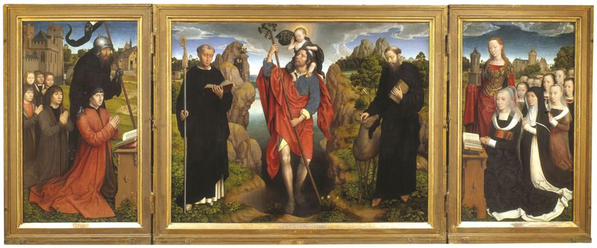
In 2005 heb ik een fotomontage (350cm x 407cm, print op zeildoek) gemaakt n.a.v. het rechterdeel van bovenstaande triptiek. Klik hier voor meer info over dit project.

De middeleeuwse religieuze triptieken zijn symmetrisch, dit i.t.t. mijn hedendaagse variant. Eigenlijk zijn het vijf schilderijen waarvan er twee panelen (de deurtjes) aan weerszijden zijn beschilderd. Er kunnen zo tegelijkertijd meerdere verhalen worden verteld en als toeschouwer kan je bepalen welk verhaal/beeld op welk moment zichtbaar mag zijn. Aan de buitenkant van de panelen schilder ik dingen die samenvallen met de vorm/formaat van het paneel. Deze dingen bedekken het portret aan de binnenzijde. Behalve dat er verschillende verhalen tegelijkertijd verteld kunnen worden, vind ik het triptiek in formeel opzicht een interessant gegeven. Als de luiken gesloten zijn dan is er een tweeluik zichtbaar; twee beelden die in kleur en vorm een eigen kracht bezitten. Hoe breng ik deze twee met elkaar in evenwicht, of juist niet in evenwicht zodat beiden interessant blijven? Er ontstaat weer een heel ander beeld als de deuren, of 1 deur wordt geopend.
Toen ik lang geleden op de kunstacademie zat schreef ik mijn gedachten op rondom autonomie van de kunsten. Misschien vond ik het jammer dat de kunsten geen vanzelfsprekende plek meer had in de samenleving. Dat zij zich losgemaakt had van het opdrachtgeverschap en meer in zichzelf ging bestaan. De kunst bracht zelf haar onderwerpen voort; als onafhankelijke kracht binnen de samenleving. Kon zo alleen 'ware' kunst ontstaan? Kan kunst ontstaan die in opdracht wordt gemaakt? Mag kunst dienstbaar zijn of lost deze dan op en wordt het ambacht? Het boek van Maarten Doorman 'De navel van Daphne' heeft me wat dat betreft flink aan het denken gezet. Zeer boeiend hoe hij schrijft over als kunst en leven met elkaar samenvallen, de kunst niet meer zichtbaar is. Dat de kunst in haar eigen autonome domein haar bepalende rol kan spelen in de maatschappij.
Terug naar mijn particuliere opdracht; de triptiek. Door deze opdracht ben ik op deze vorm gekomen wat me nieuwe inzichten geeft in technisch en beeldend opzicht. De werkelijke waarde in objectieve zin (is het kunst, overstijgt het het persoonlijke verhaal?) openbaart zich na een langere tijd. Ik ben er wel naar op zoek, juist ook binnen het kader van een opdracht.
Ondertussen bezig met de opstart en voorbereiding van twee grotere projecten in de openbare ruimte in samenwerking met verschillende partijen. Het lijkt een andere wereld; de stilte, het schilderen in het atelier t.o.v. maatschappelijke projecten daarbuiten. Toch gaat het mij 'daar buiten' om dezelfde intimiteit, alleen is de ruimte/het decor/kader een andere.
19-09-2016
De reden waarom in deze tijd een opdracht gegeven wordt om een portret te laten schilderen is meestal een bijzondere. Een markering in de tijd; stilstaan bij het moment dat voordat je het weet wegzakt in de zee van tijd.
Deze zomer kreeg ik de opdracht van een terminaal zieke vrouw en haar geliefde om een reeks werken te maken op verschillende plekken in hun huis waar het portret van de inmiddels overleden vrouw in terug komt. De dood; het sterven, is het meest intieme in het leven om mee te maken. Hoe bijzonder dat ik deel uit mocht en mag maken van dit zo verdrietige proces. Inmiddels is het dubbelportret dat ik heb geschilderd en een reisportret vanmorgen opgehaald en gelukkig is het in goede aarde gevallen. Op het moment dat iemand weet dat hij/zij gaat sterven dan is er alleen het nu dat bestaat. Iedere seconde van het heden wordt intenser; er is geen tijd meer voor maskers.
Het mooie aan schilderen is dat iemand die er niet meer is gewoon weer kan leven, of voort gaat leven. (Vaak ben ik ontroerd geweest als ik oog in oog stond met een zelfportret van bijvoorbeeld Goya of velasquez. Zij keken zolang geleden in de spiegel en nog steeds kijken zij naar de toeschouwer, naar mij, alsof het gisteren was)
Ik heb gewerkt n.a.v. foto's, die in een fractie van een seconde zijn gemaakt, maar wel op een bijzonder moment omdat we wisten dat de tijd eindig was. En de toekomst onbekend. Hieronder zie je het reisportret in olieverf op notenhout. Het is 5cm x 7cm klein en ik heb er een fluwelen zakje omheen genaaid. Volgende maand gaat het mee op reis naar het buitenland.
 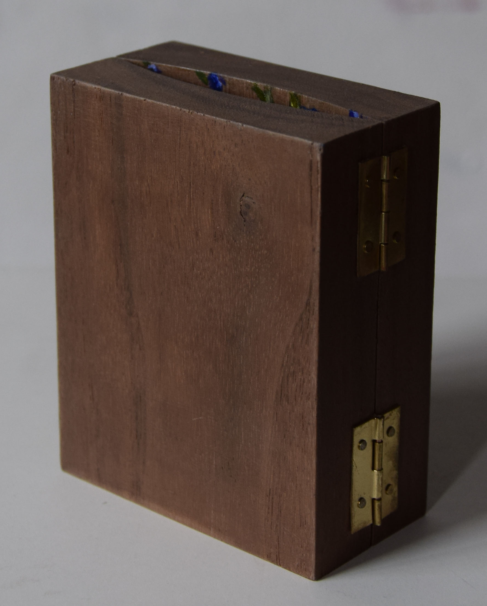
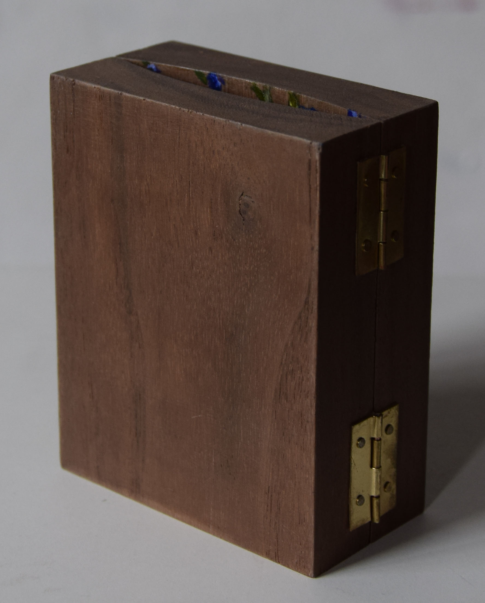 

Kunst troost. Maar ook literatuur of filosofie. Het geeft context; een muur om tegen te leunen.
Ik ga verder met een drieluik voor dezelfde opdrachtgeefsters. Het wordt een werk dat met scharnieren aan elkaar bevestigd wordt waardoor het open en dicht gedaan kan worden en steeds weer een ander geschilderd element zichtbaar wordt. Erg veel zin om eraan te beginnen! Maar eerst nog een ander werk in opdracht afronden.
Tussen de bedrijven door zijn Ies Schute en ik aan het denken over het vervolg van Het Museum van de Onschuld; hoe en waar we verder gaan met de eetbijeenkomsten en we denken na over een tentoonstelling. We hebben wel al interessante gasten in onze gedachten..Daarover later meer.
13-07-2016

Iets meer dan een week geleden heb ik bovenstaand schilderij (klik hier om er meer van te zien), van een moeder met haar 4 zonen in de bossen, afgeleverd bij de opdrachtgeefster. Het is een doek van 150cm x 200cm in olieverf op linnen. Het was een mooie opdracht waar ik met veel plezier aan heb gewerkt. In technisch opzicht was het een lastig schilderij. Ik heb enorm gestoeid met de grootte van de individuen ten opzichte van elkaar en iedereen wilde ik individueel evenveel aandacht geven zonder dat het ten koste ging van de harmonie van het totaal, zeker ook in relatie tot het landschap. Het is goed geweest dat ik het schilderij even heb laten rusten, noodgedwongen, doordat de muurschildering in de Willem2Fabriek er tussendoor kwam. Daardoor kon ik later met de juiste afstand naar het doek kijken en weer eraan verder werken.
Ongeveer 20 jaar geleden heb ik een dubbelportret geschilderd van de ouders van de moeder op het schilderij. Ik zag het hangen in de woonkamer van de opdrachtgeefster. Bijzonder dat het schilderij me terugwierp in de tijd. Meestal vind ik het lastig geconfronteerd te worden met oud werk; kijk ik vooral naar dat wat ik nu anders zou doen. Maar nu was het anders. Ik herkende mijzelf van vroeger en zag hoe mijn techniek is doorontwikkeld. In die tijd schilderde ik bewust te grote hoofden op kleine lichamen. De figuren hadden iets lachwekkends en tegelijk iets waarmee je mededogen hebt of krijgt. Doordat dit een schilderij in opdracht was zag ik dat ik niet doorgeslagen was in het lachwekkende, hoewel er wel humor in terug te vinden is, maar zag ik ook een zekere rust en ernst. Dik geschilderde delen waren afgewisseld met dunne donkere partijen. Het was alsof ik een oude vriend trof, mijn leven van 20 jaar geleden trok even aan me voorbij.
Het grote (nieuwe) doek hangt nu op de werkkamer van de opdrachtgeefster en valt perfect samen met de grootte van de muur en de kleuren in de kamer. Het werk markeert een fase in het leven, in dat van de opdrachtgeefster maar ook in dat van mij. Net zoals ik het oude doek terug zag en de film van mijn leven van dat moment aan me voorbij trok, zo is dit grote doek ook een ijkpunt in de tijd. Alles is even stil gezet, zal altijd zo blijven, hoewel het licht wat erop schijnt iedere keer weer andere dingen zichtbaar zal maken. En de kijker is zelf ook iedere dag een beetje anders.
Het is na zo'n lange tijd samen met zo'n groot doek/verhaal wel een beetje leeg in mijn atelier. Maar tegelijk is er nu weer ruimte voor nieuwe opdrachten waar ik aan verder mag schilderen. Een nieuw klein familieportret op mahoniehout en een reeks schilderijen van en voor een bijzondere vrouw.
De afgelopen maand non stop op de steiger staan schilderen. Samen met Jan de Bie en Dennis Atmatdjais had ik de opdracht om een muurschildering te schilderen in het trappenhuis van kunstencluster Willem2Fabriek. We mochten ons laten inspireren door de geschiedenis van het pand maar ook door de (hedendaagse) gebruikers.
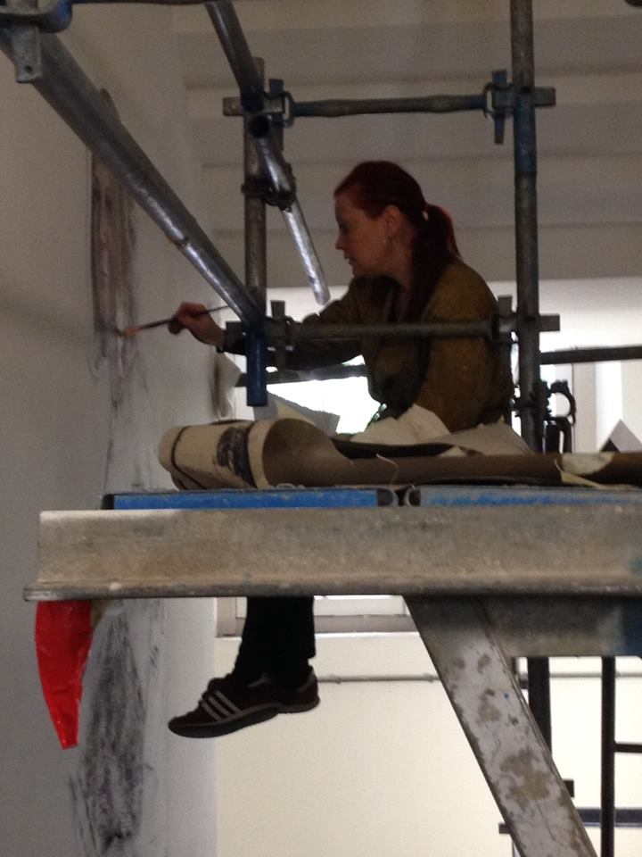 
Jan, Dennis en ik op de steiger..
Ik heb 6 mensen benaderd die symbool staan voor een bepaalde periode in de geschiedenis van de fabriek en heb ze uitvergroot geschilderd op de muur 350cm hoog. Zij dragen iets mee dat iets vertelt over hun relatie met de fabriek. Bij de muurschilderingen horen interviews (geluidsopnames) die je kunt scannen via een QR code (op de muur) waardoor je het verhaal achter de persoon kunt beluisteren.
Klik hier dan kan je de muurschilderingen zien en de interviews beluisteren.
Fysiek was het een zware klus om binnen een maand deze zes reuzen te moeten schilderen. De steiger stond immers niet langer en alles moest klaar zijn voor de verjaardag van Jan de Bie die eind mei 70 jaar werd. Bovendien was het een uitdaging om geconcentreerd te blijven omdat er geregeld mensen de trap op moesten en een woordje met me wilde wisselen. Het was fanastisch om Jan de Bie mee te maken die ondanks zijn leeftijd meer energie leek te hebben dan ik. Als een tornado ging hij door het trappenhuis heen. Je wordt als toeschouwer dan ook omringd door zijn werk. We hebben tijdens onze pauzes mooie gesprekken gevoerd, en ook met Dennis tijdens Pinksteren (terwijl er niemand in het pand was) werkten we heel stil ieder op een eigen deel van de steiger. Door de beperkte tijd, de spanning iets te maken dat ik nooit eerder op die manier had gedaan (nog nooit een tuba geschilderd, of een sleutelbos; een technische uitdaging) merkte ik wel dat je in een bepaalde flow komt. Gewoon iedere dag maar doorgaan, moe of niet moe, zin of geen zin, mooi weer of geen mooi weer, passanten of geen passanten. Het is ook het bedwingen van die ruimte die je pas ervaart hoe groot deze is als je erop gaat werken. Het lijkt een krachtmeting met die meters, of beter; een dialoog. Ik vergeleek in een gesprek met Jan de Bie dit werk met schermen (ik heb eerder met schermers samen gewerkt in project 'Picknick in het bos'); zodra je denkt/vindt dat je lekker bezig bent dan steekt de tegenstander je. Wat ik hiermee bedoel te zeggen is dat je je tracht te verbinden met het moment van het doen, hoewel er zeker enig denkwerk aan vooraf gaat om een raamwerk te maken waar je je aan vast kunt houden. Door steeds maar door te gaan binnen diezelfde ruimte-dit raamwerk/compositie en daadwerkelijke ruimte- ontstaan die momenten waarin alles samen valt zonder dat 'het hoofd' er iets van vindt.
De maat van mijn geschilderde mensen is gebaseerd op de maat van de ruimte. De toeschouwers worden kleine mensen; ik zag het op de foto's van de onthulling. Het werkt vervreemdend. Achteraf gezien vind ik het dapper dat deze mensen zich zo hebben durven laten uitvergroten. Ik ben dankbaar voor hun vertrouwen.


Jan de Bie, Dennis Atmatdjais, assistent Maartje Grosfeld en assistent Puck van Hees
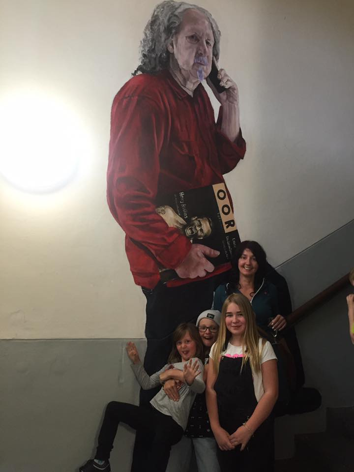 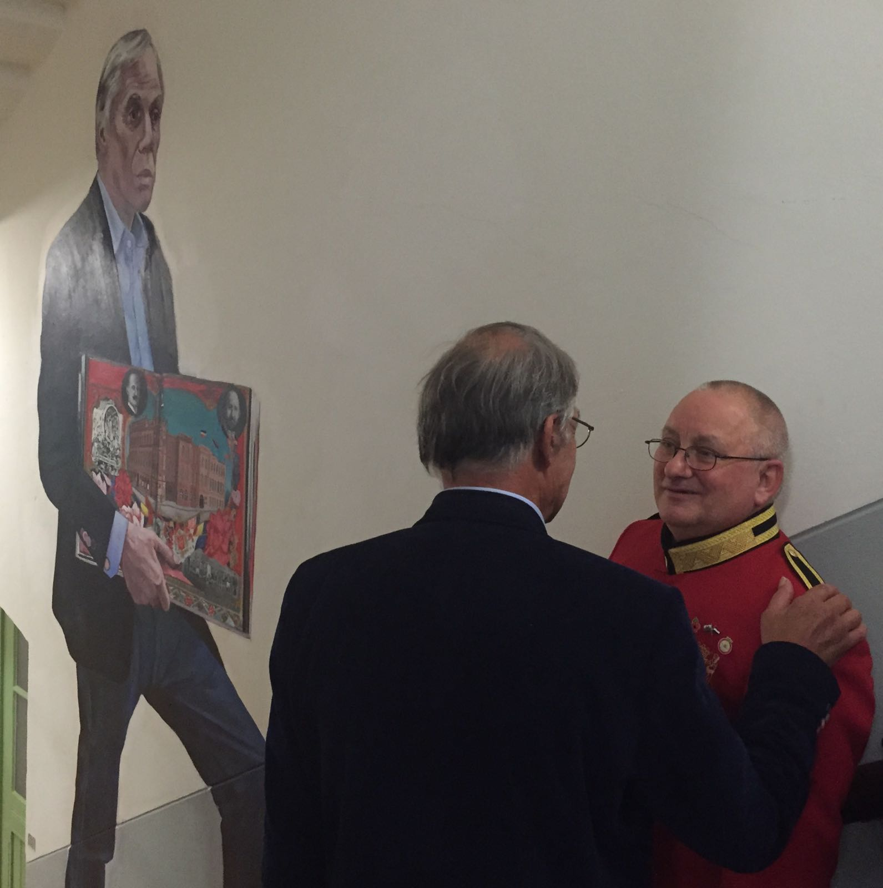
Dochter en kleinkinderen voor het portret van hun grootvader Paul Smits en geportretteerden Paul Goulmy en Mike van Lieshout

Dit ben ik schilderend getekend door Jan de Bie, onderdeel van de muurschildering.
21-03-2016
De afgelopen week stond de tijd even stil. Onverwacht overleed René Pingen, directeur van het Stedelijk Museum in 's-Hertogenbosch, op 56 jarige leeftijd. Gisteravond was de herdenking in het museum met heel veel mensen. Een symphatieke, eigenzinnige, energieke man, een vernieuwer, gefocust op de inhoud, kritisch, maar ook met veel humor. Ik ben blij en dankbaar dat ik met hem heb mogen samenwerken. In 2014 heb ik in het Stedelijk Museum mijn boek In Tussentijd gepresenteerd d.m.v. een performance en eind vorig jaar heb ik in het kader van Reínventing Happiness mijn project Reïnventing Paradise uit mogen voeren. Door de inspirerende gesprekken met René scherpte ik mijn werk aan, ging ik net een stapje verder. Hij was directeur maar liet zich niet verleiden zich zo te gedragen; hij hielp net zo hard mee als iedereen bij de opbouw van een tentoonstelling. Zijn enthousiasme en betrokkenheid werkte aanstekelijk op de omgeving.
Waren er maar meer René's.
Van twee jaar Reïnventing Happiness is een boekje gemaakt. Ik ben blij dat mijn project er mooi beschreven in staat. De vormgevers wilden eerst een andere foto in de publicatie zetten. Deze
Toen ik het digitale boekje kreeg toegestuurd was ik verrast dat er een andere foto was geplaatst. Ik vroeg René waarom en hij antwoordde dat de foto niet de essentie van het project liet zien.
Interessant vind ik de tekst in het boekje over mijn project, geschreven vanuit een beschouwer. Als maker is er een directe betrokkenheid, zit je dichterop het werk waardoor je het geheel soms niet kunt overzien. Daar is tijd voor nodig, of andermans ogen. Zo jammer dat René niet meer mee kan kijken.


03-03-2016
De onthulling van het koningsportret op 3 februari in de Oranjegalerij is alweer een maand geleden. Inmiddels ben ik bezig met een nieuwe opdracht op een groot doek van 150cm x 200cm. Samen met een moeder en haar vier zonen ben ik de bossen in gegaan in Geldrop waar ik hen heb gefotografeerd. Het is voor hen een betekenisvolle plek in eigendom van haar vader die ik samen met zijn vrouw 20 jaar geleden heb mogen schilderen. Door mijn boekproject dat ik in 2014 heb gerealiseerd ben ik weer met hun in contact gekomen. Het is een ingewikkeld schilderij dit groepsportret in de bossen, maar geweldig om aan te werken.
Op 28 februari ben ik samen met Ies Schute begonnen met Het Museum van de onschuld. De titel is afkomstig van een roman van Orhan Pamuk die gebaseerd is op voorwerpen die hij verzameld heeft in zijn geboortestad Istanbul.
We organiseren een reeks eetbijeenkomsten in onze ateliers waar we vragen aan de genodigden iets mee te nemen dat iets zegt over hun drijfveren; waarom ze doen wat ze doen. Het gaat over werk dat meer is dan werk alleen. Ies en ik hebben ook het 1 en ander laten zien en verteld. Het viel niet mee om het juiste te vinden en te laten zien. We kwamen erachter dat de vraag een ingewikkelde is, en tegelijk een essentiële die aan het denken zet.
De eerste bijeenkomst was heel bijzonder met Olphaert den Otter, André van Dijk, Margriet Kemper, Wim Verschuren, Stijn Peeters, Kim verhoeven en Petra Cardinaal. Op dit moment ben ik bezig het filmmateriaal en de geluidsopnames te bekijken en in te korten. Ik heb wel al een begin gemaakt met een digitaal Museum van de onschuld met wat foto's die een sfeer laten zien van de avond. Komende week ga ik meer materiaal erop zetten. Ik heb de genodigden gefotografeerd met de meegebrachte dingen. Er zijn prachtige verhalen verteld. Lastig om het materiaal in te korten en de essentie eruit te halen, maar goed om in de gesprekken te duiken en ze te archiveren opdat ze niet vergeten worden.
7-12-2015
Vandaag een week geleden heb ik de installatie 'Reïnventing Happiness' afgebouwd in het Stedelijk museum in Den Bosch, terugkijkend op een fantastische afsluiting de dag daarvoor.
Alle deelnemers aan het project die zichzelf bloot hadden durven geven in het paradijselijke decor in het museum als Adam en Eva kwamen samen om gezamelijk naar de film te kijken. Ze zagen zichzelf terug-gemonteerd- in een bosfilm waar ze eerder voor geposeerd hadden, afgewisseld met andere duo's. Het was een experimenteel project met veel onverwachte factoren. Van tevoren wist ik niet hoeveel Adam's en Eva's ik zou kunnen vinden en hoe ze eruit zouden zien. Ik heb uiteindelijk zelfs veel mannen moeten teleurstellen die niet mee konden doen vanwege plaatsgebrek. De meeste Adam's en Eva's had ik nog nooit ontmoet, en sommige duo's kenden elkaar niet; deze stellen had ik vrij intuïtief bij elkaar gezet.
Het project groeide tijdens het maken; aanvankelijk had ik een statischer beeld in gedachten. Een filmbeeld van een bos waar je slechts wat blaadjes ziet bewegen door de wind met daarvoor een man en vrouw naakt poserend in één stille stand. Maar gaandeweg zag ik dat het mooi was als de deelnemers gingen bewegen en ik heb verschillende bosopnames in elkaar laten overvloeien waardoor het een wat spannender beeld/decor werd om naar te kijken. Er onstond iets bijzonders tussen de duo's tijdens het poseren. Ik vond het mooi om te zien hoe de Adam's en Eva's die elkaar niet kenden met elkaar in gesprek raakten of zelfs prachtig gingen acteren. Een mooi moment was toen een klein jongetje met zijn moeder kwam kijken naar de installatie terwijl de modellen stonden te poseren. Hij was meer geïnteresseerd in de straalkachel dan in die twee blote mensen. Voor hem was dat bloot heel gewoon, maar dat straalkacheltje had hij nog nooit gezien. Op de laatste dag van de tentoonstelling, toen alle Adam's en Eva's samen kwamen onstond het idee van één 'Adam' om gezamelijk uit de kleren te gaan als afsluiting. Toevalligerwijs was op dat moment fotograaf Ben Nienhuis in de tentoonstellingsruimte waardoor onderstaande prachtige foto's gemaakt konden worden. Het was een fantastische spontane performance die een geweldig beeld op heeft geleverd. De vraag die ik me in dit project heb gesteld "Kunnen we terug naar het moment van voor de schaamte?" Is hiermee volmondig met "Ja" benantwoord. (Ik ga nog aan de slag om de film 'Reïnventing Paradise' geschikt te maken voor op mijn site zodat je het nog terug kunt kijken.)
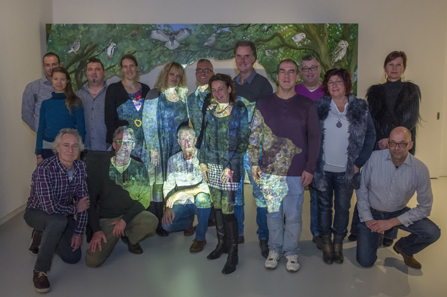 
Fotografie: Ben Nienhuis
Terwijl meubelmaker Jan van Hees hard aan het werk is om het paneel te maken voor het koningsportret van koning Willem-Alexander waartoe ik de de opdracht heb gekregen van de gemeente 's-Hertogenbosch, ben ik ondertussen aan het werk aan het project 'Reïnventing paradise' dat op 28 september van start gaat in het Stedelijk Museum in 's-Hertogenbosch. Ik ga een paradijs maken d.m.v. projecties en schilderingen waarin hedendaagse Adam's en Eva's uitgenodigd worden om te poseren. Via Omroep Brabant heb ik een oproep mogen doen, waardoor ik die dag ongeveer 700 bezoekers kreeg op de website. Veel mannen durven wel, maar vrouwen zijn wat terughoudender om zich op te geven voor deze blote uitdaging. Ik ben nog op zoek naar twee vrouwen..
In oktober ga ik van start met het schilderen van het portret van de koning. Van de tot stand koming van het portret zal ik een blog bijhouden, niet op deze plaats maar op een koninklijk hoekje van mijn website. Eind deze maand zal ik het blog openbaar maken. Het is een bijzondere opdracht; het mooie is dat het schilderij in de Oranjegalerij in het gemeentehuis komt te hangen, naast de voorgangers van koning Willem-Alexander.

Hierboven het notenhout voor het paneel van het koningsportret wat aan 'het rusten' is nadat Jan het open heeft gezaagd. Jan gaat het op de traditionele manier verlijmen. Ik ben met hem naar de houtgroothandel geweest om het hout uit te zoeken, en heb er een filmpje van gemaakt dat ik later op het koninklijke blog zal plaatsen.
Ondertussen nog bezig met wat portretopdrachten. Het zijn eigenlijk troostportretten; van veel te vroeg overleden mensen. Het is heel mooi om te mogen doen.
14-07-2015
Debatteren is in, in Den Bosch..Ik noemde de themapicknicks/groepsgesprekken niet zo, maar in de titel van het artikel dat in het Brabants Dagblad verscheen rondom 'Picknick in het bos/Het woud der verwachting' werd het wel zo genoemd: 'Debatteren, dineren, en dromen in kunstbos'. (door Mark van de Voort, 7 mei)
De lokale PvdA organiseert bijvoorbeeld al geruime tijd debatten in de bibliotheek (hoewel deze niet meer zo heet, men noemt het liever populistisch BIEB..net zoals kinderen KIDS worden genoemd;)) waar ik laatst bij aanwezig was omdat het ging over de bezuinigingen op cultuur. Er zullen binnenkort flinke klappen gaan vallen en het lijkt erop dat de grote instellingen deze moeten op gaan vangen. Het debat was kwa niveau niet bepaald om naar huis te schrijven (daarom doe ik het maar op dit blog) en daar is naderhand flink heen en weer over gemaild; het leek debatteren om het debatteren.
Ondertussen heb ik de laatste picknickfilm afgemonteerd en de vraag die Leidi Haaijer stelt in de picknick 'Kunst als eerste levensbehoefte' (over mensen die van voedsel hun beroep hebben gemaakt en/of te maken hebben met schaarste en/of overvloed): "Deze bijeenkomst lijkt op een tvprogrammaformat, camera erop, dat vinden de mensen leuk. Maar gaat dit effect hebben?" Die vraag blijft maar rond zingen in mijn hoofd, en ik vraag me tegelijk af waar al die debatten goed voor zijn en waarom in deze tijd mensen daar behoefte aan hebben. Er is zoiets als een tijdsgeest waarin bepaalde woorden, begrippen in de lucht hangen. Bijvoorbeeld: tussentijd, zoals mijn boek dat vorig jaar uitkwam getiteld was 'In Tussentijd' en in Watou dit jaar het kunstenfestival 'In de luwte van de tussentijd' heet. (De intendant was wel geïnspireerd door mijn boek dat ik hem had opgestuurd. Hij had er enthousiast van alles in onderstreept zoals ik zag toen ik op zijn uitnodiging op bezoek kwam. Jammer dat de belofte niet nagekomen werd om een project te kunnen doen in dat gekke Belgische dorp, maar de gedachte is wel leuk dat ik misschien een beetje inspirerend ben geweest.)
En dan het woord; tussenruimte..die ik vond bij Foucault, de Franse filosoof. Hij inspireerde me in mijn project rond 'Picknick in het bos..'. Ik zag de Willem2Fabriek als tussenruimte, een ruimte die van functie verandert en eigenlijk een poort naar het verleden én de toekomst is. Bijzonder dat ik datzelfde woord weer tegenkom bij een project dat zich af gaat spelen bij de Tramkade tijdens theaterfestival Boulevard waarin ook gesprekken met diverse mensen uit Den Bosch een rol gaan spelen. Hoe graag ik het ook zou willen, zo orgineel ben ik niet. Er hangt iets in de lucht.
We hebben kennelijk behoefte aan zo'n tussentijd in de kunsten, en aan contact, debatteren en samen voedsel verbouwen. Maar verandert het iets? Blijven de woorden een beetje in de lucht hangen zodat anderen ze er weer uit kunnen vissen en daar weer opnieuw over kunnen gaan debatteren. Van voren af aan?
Toch...doordat ik de gefilmde (picknick)gesprekken van ieder een uur weer opnieuw beleef, en ze in moet korten voor op deze site, (het gaat me aan het hart maar ja, wie luistert/kijkt er een uur naar een film waar nagenoeg niets in gebeurt?..Op internet is 3 minuten al lang, voordat je het weet ben je alweer op een andere site..wel leuk als je als lezer dit nu nog aan het lezen bent trouwens..) luister ik beter en hoor ik meer wat er echt gezegd wordt. Doordat ze zijn opgenomen en ik ze bewaar op deze site vervliegen de woorden niet, niet helemaal, voor diegenen die het geduld en interesse hebben om ze te bekijken. "Maar gaat dit effect hebben?" Ik kan alleen bedenken dat toen ik vorige zomer de woorden van Foucault las, dat hij me geinspireerd heeft, en daarmee inhoudelijk gestuurd heeft in mijn denken wat uiteindelijk geleid heeft tot het project in de Willem2Fabriek. Het waren wel woorden van een groot denker die zijn bewaard in een boek met een grote oplage, en ik ben wat dat betreft maar een heel kleintje. Maar dat heeft wel weer grote voordelen, en geeft in zekere zin vrijheid.
Als je zin hebt kan je de picknickfilms nog eens bekijken en beluisteren. Er zijn inspirerende dingen gezegd door mijn gasten, ik heb veel van ze geleerd en ben ze dankbaar. Kijk maar op:http://moniquebroekman.created.today/project/picknick-het-boshet-woud-der-verwachting/
19-6-2015
Acht juni was de laatste dag van 'Picknick in het bos/Het woud der verwachting'. Het was een arbeidsintensief project, fysiek maar het was ook veel regelen en afspraken maken met veel verschillende mensen. Bovendien merkte ik dat het goed was aanwezig te zijn in de installatie maar het was ook leuk om te zien hoe bezoekers zich daarin bewogen. De laatste dag was het druk; mensen die nog op de valreep kwamen kijken waarvan er één vrouw was die heel aandachtig en lang met koptelefoon op luisterde en keek naar de gesprekken die hadden plaats gevonden op de picknickkleden. Ik hoorde haar regelmatig hard lachen.
Op 7 juni in de avond was het de openstelling exclusief voor leden de landelijke naturistenvereniging waarvan een aantal leden ook deel hadden genomen aan de themapicknick 'Het blote bos'. Ik heb hen begeleid in (naakt-)modeltekenen. Maar voorafgaand hebben ze uitgebreid gekeken en geluisterd naar de film die uit de naturistenpicknick is voortgekomen. De komende tijd ga ik de vier films van een uur nog eens bekijken en inkorten zodat ze geschikt zijn voor op internet. Goed om de gesprekken weer eens opnieuw te beleven en om de essentie eruit te filteren.

Modeltekenen tijdens de avondopenstelling in de Willem2Fabriek voor leden van de NFN

De leden poseerden voor elkaar.
Afgelopen week heb ik samen met Jan van Hees de bomen neergehaald. Het is een gek moment. De lichten gaan aan, doeken voor de ramen weg, schilderijen van de muur, projecties weg, magie weg. Het is ook een beetje een triest moment; een afscheid van een eiland in de tijd dat slechts vier weken heeft geduurd, maar wat kan er veel in een korte tijd gebeuren..
Eén van de leuke dingen die zijn gebeurt tijdens het project is dat een architect/kunstenaar-werkzaam in de W2Fabriek- proeflessen gaat nemen bij Schermclub Den Bosch (hij wist niet die er was in Den Bosch en had altijd al eens willen schermen..) en dat een moeder van een schermster-die deel heeft genomen aan de openingsperformance- mee heeft gedaan aan de workshop 'Bos in druk' i.s.m. het Grafisch atelier.


Jacqueline de Hey, uitvoerend producent van van Oschfilms (die om de hoek van de tentoonstellingsruimte is gehuisvest), vroeg me in een vroeg stadium van de installatie wat ik met de bomen ging doen na afloop van de tentoonstelling (één van de meest gestelde vragen). Ik had er geen idee van. Van tevoren denk ik nooit na over dat soort dingen. Ik heb vaker tijdelijke projecten gedaan, die op dat moment te zien waren en daarna alleen bestaan in de herinnering van de toeschouwer. Misschien dat belevenissen waardevoller zijn dan materie; waar heb ik dat eens gelezen, of is daar niet ooit onderzoek naar gedaan?
Maar goed, toch is het heel fijn en mooi dat we twee bomen hebben mogen plaatsen bij van Oschfilms; één in de oranje gang en één in de gemeenschappelijke ruimte. Door het raam wat deze twee ruimtes met elkaar verbindt spelen de takken van de twee bomen door elkaar heen waardoor er een mooie gelaagdheid ontstaat. Overigens is het niet zomaar gedaan zo'n boompje planten, want ze zijn 4 en een halve meter hoog en ook nog eens heel breed. Zie dat maar eens door een gewone deur te krijgen..Maar het is gelukt en hieronder kan je het resultaat bekijken. En het leuke is dat in ruil voor het logeren van de bomen ik van hen een technisch filmadvies krijg voor een nieuw project waar ik op aan het broeden ben.
 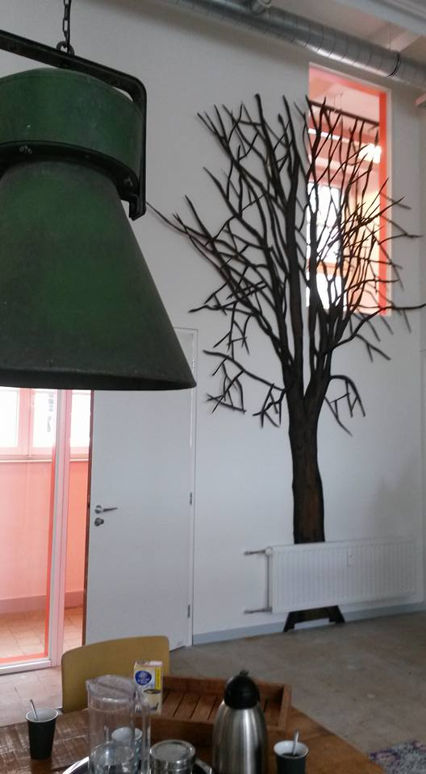
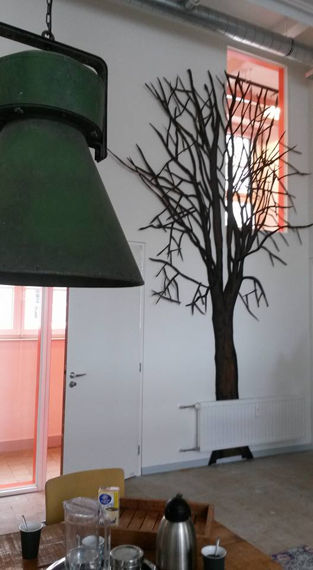


Door 'Picknick in het bos..' heb ik veel nieuwe mensen leren kennen en bij elkaar gebracht op de picknickkleden, maar ook heb ik de gebruikers van de Willem2Fabriek leren kennen. Als je lang vertoeft in zo'n centrale plek waar kantoren aan grenzen, waar iedereen doorheen moet om naar zijn werkplek te gaan, dan leer je ongemerkt die verschillende wereldjes een beetje kennen. Mensen van het poppodium die wel erg hard werken en waarvan 1 werknemer geraakt door mijn installatie lang in zijn eentje stond te kijken en vertelde dat hij van kale donkere bomen houdt waarvan hij er ook 1 getatoeëerd heeft op zijn lichaam. De warme sfeer bij het Grafisch Atelier waar ik op uit keek vanuit mijn installatie, waar het iedere dag druk is met scholieren of studenten van het sint Lucas. Het is een plek met een hart. En dan de lieve betrokken dames van de receptie beneden hebben geweldig werk geleverd met al dat aan en uitzetten van de beamers en players. Peter van de Zanden, de technische videoman die verder ook alles kan, die me geweldig heeft geholpen..maar ook Jan van Hees zonder wie ik dit echt niet kan. Marc Bolsius die zomaar voor niks foto's kwam maken samen met zijn vrouw..en wat voor foto's! En bedankt ook Ivonne van der Velden voor het scheppen van ruimte voor 'Picknick in het bos/het woud der verwachting'. Dag Willem2fabriek!
 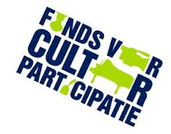
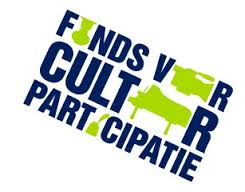


En ook nog dank sponsors!!
2-6-2015

Aandachtig kijken kinderen met rode wangen op de bovenstaande foto met moeders en een opa en oma naar de kinderfilm die ik in de installatie heb gedraaid op 27 mei nadat ze hun bosvruchtentaart en bosvruchtenlimonade verorberd hebben. Een klein kindje viel samen met zijn moeder in slaap op het picknickkleed, niet gestoord door de anderen die geboeid door keken naar de film. Een heel ander publiek dat de ruimte vulde. Een jongetje vertelde me dat hij dacht (aan de hand van de flyer) dat ze in een schermpak de installatie moesten gaan bekijken.
Afgelopen zaterdag vond de workshop Materiaaldruk plaats i.s.m. natuurgids Ferd Sauter en kunstenaar Roos Terra in het Grafisch Atelier dat tevens gevestigd is in de Willem2Fabriek. Hieronder zie je een foto van het begin van de wandeling bij Fort Isabella

Ferd vertelde enthousiast over de planten en bloemen die we onderweg tegenkwamen waarop een bijzonder rupsje zat..


Over de geschiedenis van Fort Isabella had Ferd documentatiemateriaal meegenomen.

Tussen de natuurverhalen door gingen de deelnemers op zoek naar takken en planten die geschikt zouden kunnen zijn om te verwerken tot materiaaldruk.
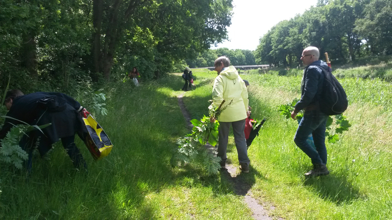
In het Grafisch Atelier aan de slag..
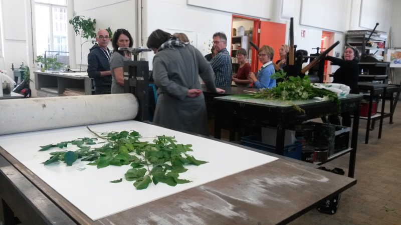
Het ininkten van de planten.
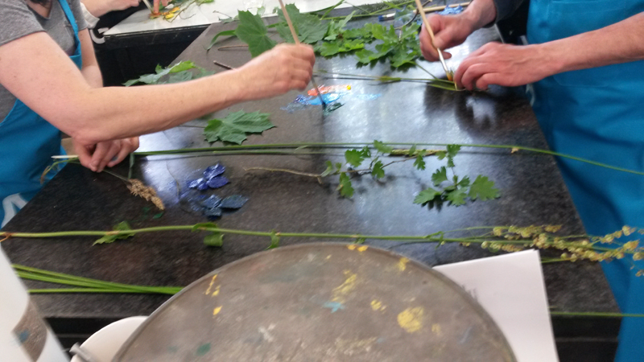
Papier bevochtigen, op de inge-inkte planten leggen en drukken maar..

En dan het magische moment van bekijken wat eruit is gekomen.
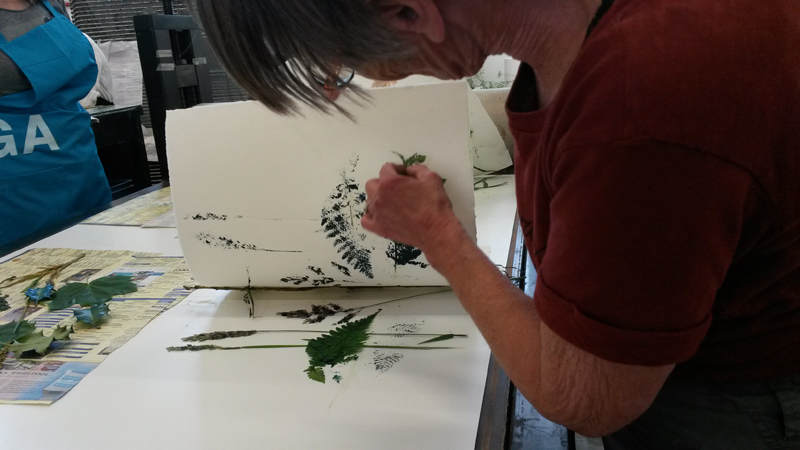
De materiaaldrukken hebben we te drogen gehangen in de installatie; geen bladeren aan de bomen maar wel tussen de bomen.

Zondag 31 mei was de workshop modeltekenen, met een fantastisch vol model die goed gebruik maakte van de ruimte. Ze ging in projecties staan en liggen op de bankjes die inmiddels in de ruimte staan zodat bezoekers via de koptelefoons kunnen luisteren naar de gesprekken die hebben plaats gevonden op de picknickkleden.
De ezels stonden verspreid door de ruimte. Iedere keer als het model een andere pose aannam op een andere plek in de ruimte verhuisden de tekenenaars met hun ezels mee. Zo ontstond er een dynamische installatie met de tekenaars en het model die ongemerkt een peformance uitvoerden voor de ogen van de bezoekers die naar de tentoonstelling kwamen kijken.
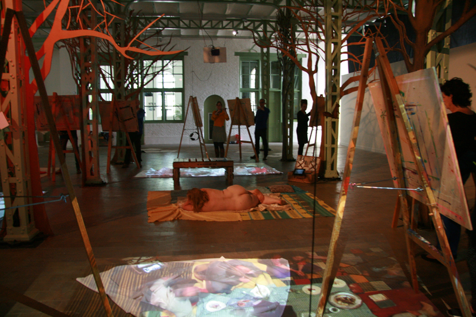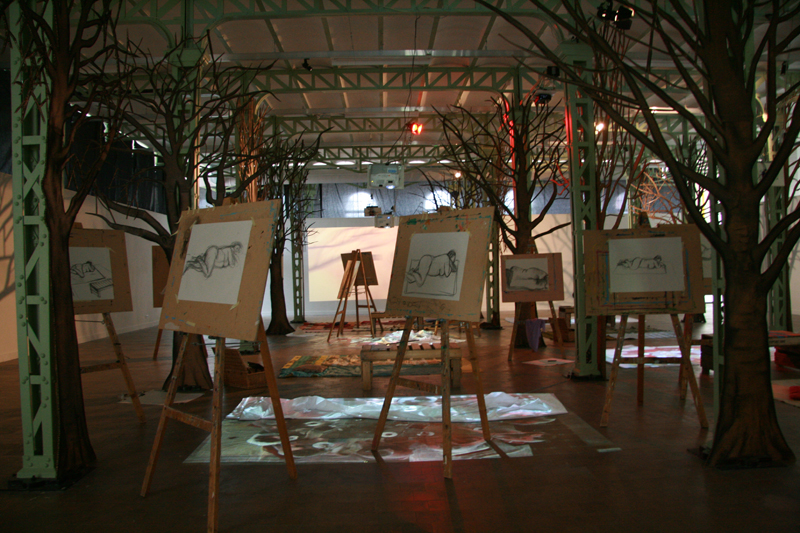
Woensdag tot en met zondag is Picknick in het bos/Het woud der verwachting nog te zien van 11 tot 17 uur. Zaterdagavond vindt nog een besloten avond plaats voor de landelijke naturistenvereniging. Zij zijn vooral geïnteresseerd in de naturistenfilm, waar we het over hebben gehad op 16 mei de dag van de opname. Maar er zal dan ook model worden getekend. Ik ben benieuwd..
25-5-2015
Wat kan er in een korte tijd veel gebeuren..
Alle vier de themapicknicks hebben plaatsgevonden in de Willem2Fabriek, én de workshop 'Eten uit het bos'. Spannend was het, de picknick 'Het blote bos' met leden van de landelijke naturistenvereniging. Als enige zat ik gekleed tussen 10 naakte picknickende mensen. Ieder kwam uiteraard gekleed de Willem2fabriek binnen en dan breekt het moment aan van 'de naakte waarheid'; een moment van niets meer te verbergen hebben en misschien wel van gelijk zijn. Het voelt even onnatuurlijk maar het is wel natuurlijk..toch? Het was mijn eerste keer van gespreksleider zijn, hoe werkt dat; hoe geef ik iedereen evenveel tijd om te spreken, hoe houd ik de inhoud in de gaten, goed luisteren en ook improviseren, en dat in een ongewone setting.
Tijdink en Tijdink verzorgden de picknicks; op ieder thema hebben ze totaal verschillende hapjes gemaakt. De meest opvallende was bij 'Het blote bos' de cakes met daarop in marsepein geboetseerde naakte mensen. Dit verraadde wel de kunstacademie-achtergrond van Evelien en Myriam Tijdink.
Opvallend vond ik het naturistenechtpaar die met een mooie Brabantse tongval vertelden in het dagelijkse leven agrariërs te zijn. Zij kamperen niet maar gaan naar naturistenhotels. Volgens hen verdwijnen rangen en standen onder de naturisten. Je hebt niets te verbergen, je bent wie je bent. Iemand anders vertelde dat hij hele intense vriendschappen heeft gekregen tijdens naturistenvakanties. Er is natuurlijk veel meer verteld, over o.a. hoe familie en vrienden reageren bijvoorbeeld, over het gevoel van vrijheid, over de strenge regels van sommige naturistenverenigingen e.d. Als je wilt weten wat er allemaal verteld werd, kom dan kijken en luisteren in de installatie in de Willem2Fabriek. Het kan t/m 7 juni van woensdag t/m zondag 11-17 uur. Hieronder zie je de projectie (van bovenaf op een wit kleed) van de filmopnames van de picknick 'Het blote bos' en een geklede naturist met een bijzondere cake met een geboetseerde marsepeinen naakt erop.
 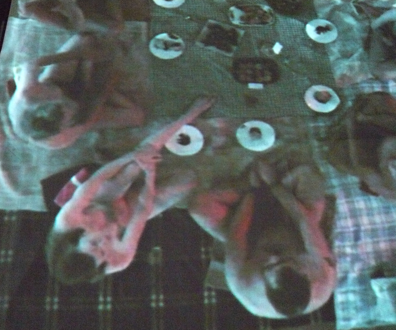
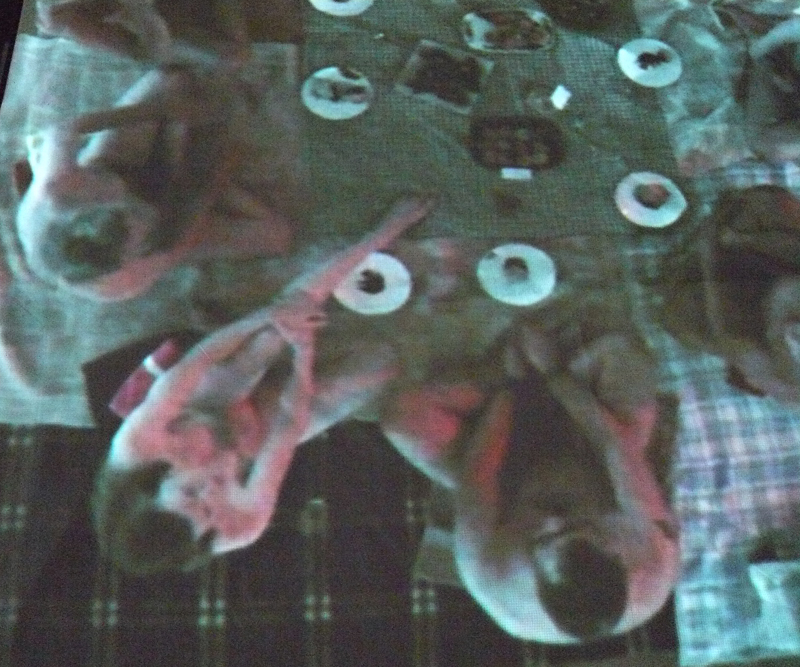 
Je kunt dan ook luisteren en kijken naar de picknick 'De fabrieken van Den Bosch' waarin er gesproken werd over waar nu de werkelijke macht ligt in de politieke besluitvorming, en de picknick met de verschillende politieke partijen uit de gemeenteraad. Hieronder op de foto gemaakt door Inke Katoen (PvdA), v.l.n.r. Ben Wagemakers (CDA), Rosmalens Belang, Mike van der Geld (D66), Ralph Geers (VVD), Abe Renema (Groen Links), Judith Hendrickx (Bossche Groenen)
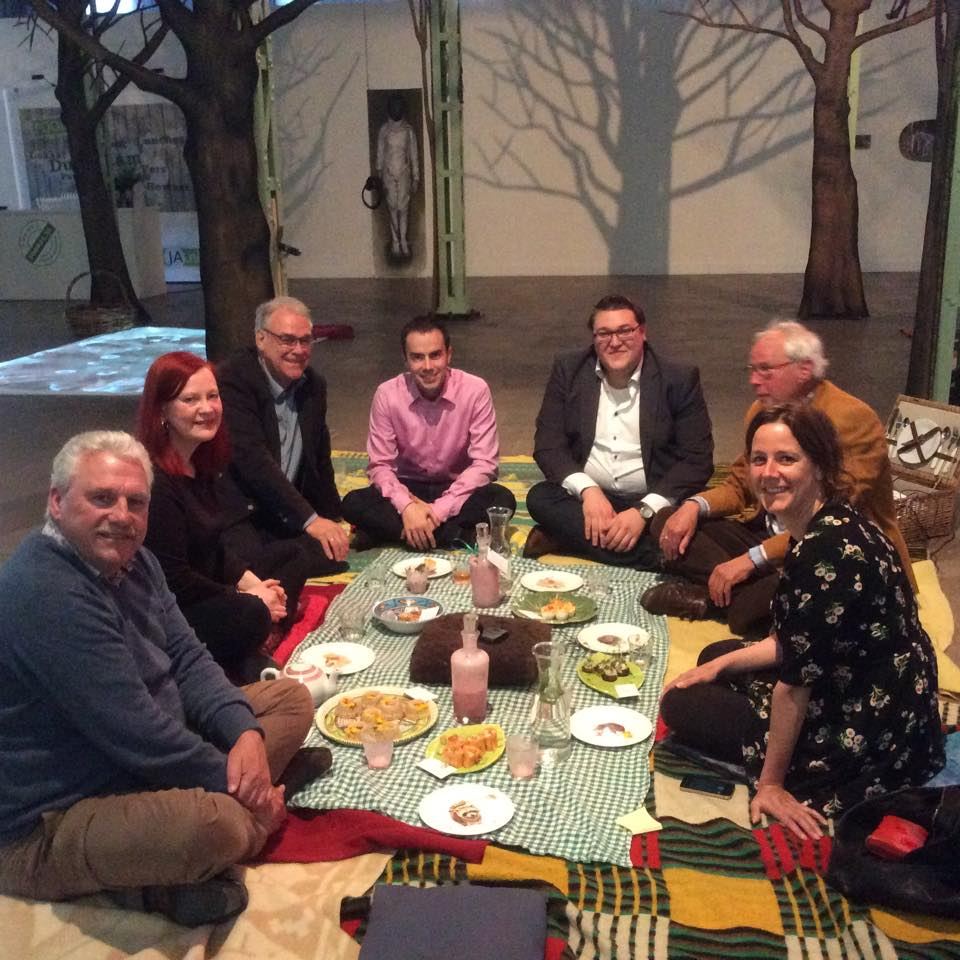
Hieronder afbeeldingen van picknick 'De fabrieken van Den Bosch', de projectie en op het moment zelf..
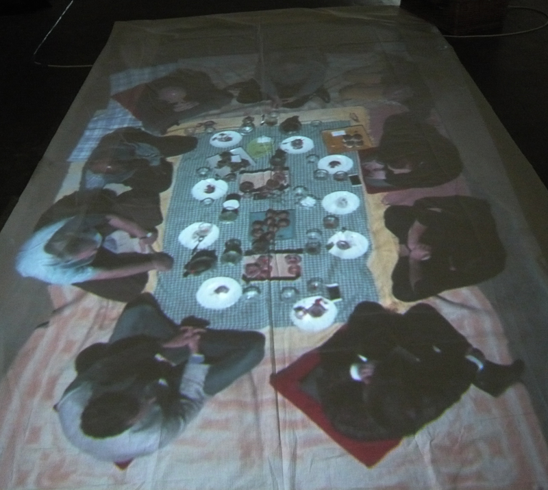 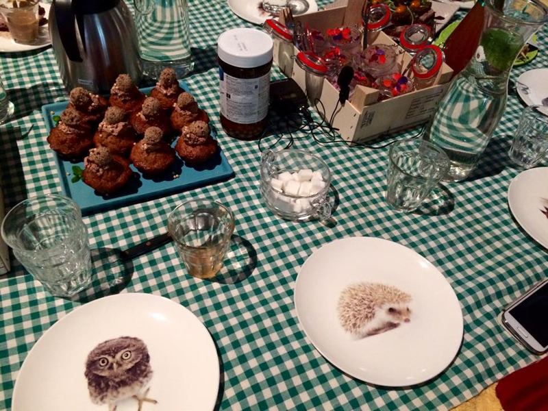 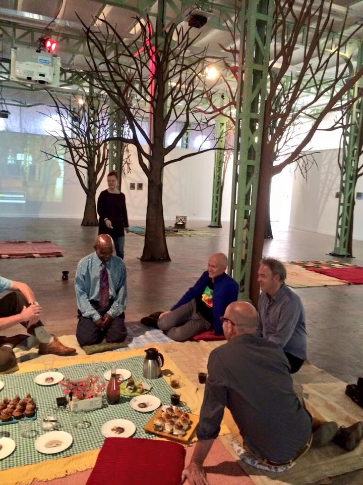
A.s. woensdag laat ik de laatste film zien die met de titel 'Kunst als eerste levensbehoefte'. Deelnemers waren: kunstenaar Leidi Haaijer, Lesha Bosman (journalist, initiatiefnemer wandeltocht voor de armoede van Den Bosch naar Den Haag), Sophie Gruijters (Transfarmers/stadslandbouwers), Geurt Grosfeld (Ambassade voor creatieve zaken), Theo Danen (boer), Albert Caron (Hermes business netwerk), en Tineke Schuurmans (kunstenaar). Het was een mooi gesprek waarin er visitekaartjes werden uitgewisseld tussen de stadslandbouwers en boer Theo Danen.
Na iedere picknick werd er nog nagepraat en leek het alsof het niet klaar was, alsof het een begin zou kunnen zijn van een vervolg ontmoeting om dieper op het thema in te gaan en misschien wel tot daden over te gaan. Het was grappig om te zien wat er met mensen gebeurt als je een uur op de grond zit, soms zonder schoenen; dat je soms niet meer weet hoe je moet zitten. Ik denk dat die ongewone setting iets deed met de deelnemers. In een reactie op een vraag van iemand hierover op facebook ("Inspireert de setting ook tot andersoortig gesprek?") antwoordde deelnemer aan de politieke picknick Inke Katoen (PvdA): ".. je kunt in de commissies en in de raad niet spreken van een gesprek. Ik ben meer van de dialoog en in de politiek wordt er van je verwacht dat je debatteert over de verschillen. En ik betrapte me er op dat ik tijdens de picknick Ben Wagemakers van het CDA goedmoedig op z'n knie klopte. Dat is ook nog nooit gebeurd. We waren ook eerlijker over onze opvattingen over kunstenaars. Die weten we wel van elkaars (partijen) maar nu konden we daar individueel en genuanceerder over praten. Misschien krijg je het filmpje te zien en dan hoor je de levensgrote verschillen in visie op cultuur."
Vanaf woensdag zijn er vier filmprojecties op witte kleden te zien in het 'kunstbos'. Het is alsof er lichtplekken in het bos zijn ontstaan. In het midden van de ruimte heb ik alle andere kleden en dekens neergelegd. Een eiland van dekens in allerlei kleuren en patronen om op te rusten voor diegenen die dat willen.
Het was mooi om te zien dat toen het gehele presidium aanwezig was in de Willem2fabriek, druk aan het borrelen in de installatie, er een stel op leeftijd binnen kwam met grote rugzakken. Ik vroeg of ze hun tent kwamen opzetten. "Nee", zeiden ze, "We komen picknicken". Ze hebben samen wat gekeken en geluisterd naar de films en gingen lekker languit liggen op een kleedje.
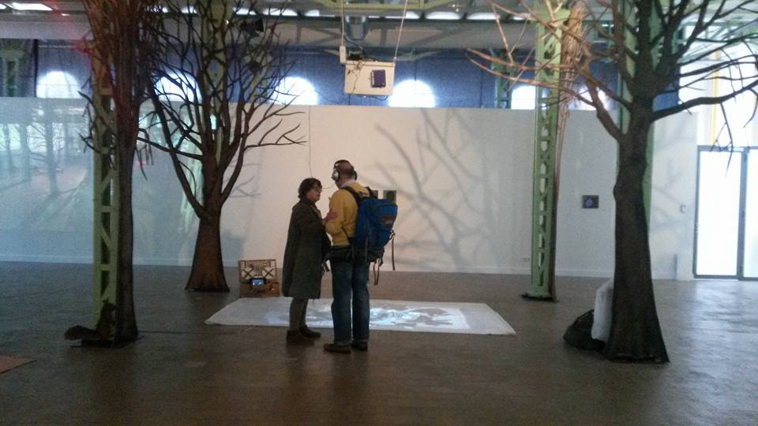 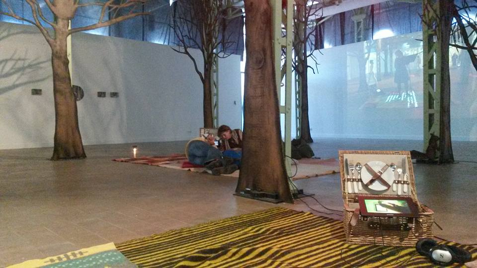 
Heel mooi om te zien dat mensen zich vrij voelen in de ruimte. De wekelijkse lunch van de gebruikers van de Willem2Fabriek vindt nu ook plaats in mijn installatie en toen ik afgelopen week de tentoonstellingsruimte binnen kwam zag ik twee vrouwen langdurig liggen op een kleed. Af en toe stonden ze op om wat te bekijken of te beluisteren om daarna weer te gaan liggen. Er is echt een plek aan het ontstaan waar het, denk en hoop ik, goed toeven is.
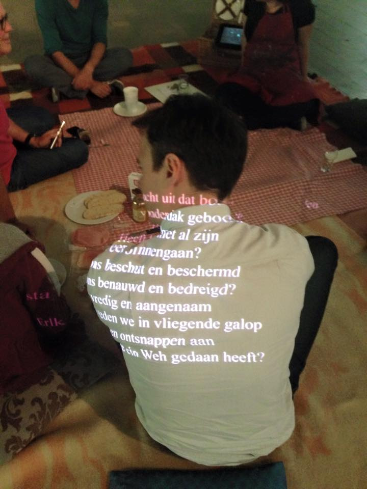 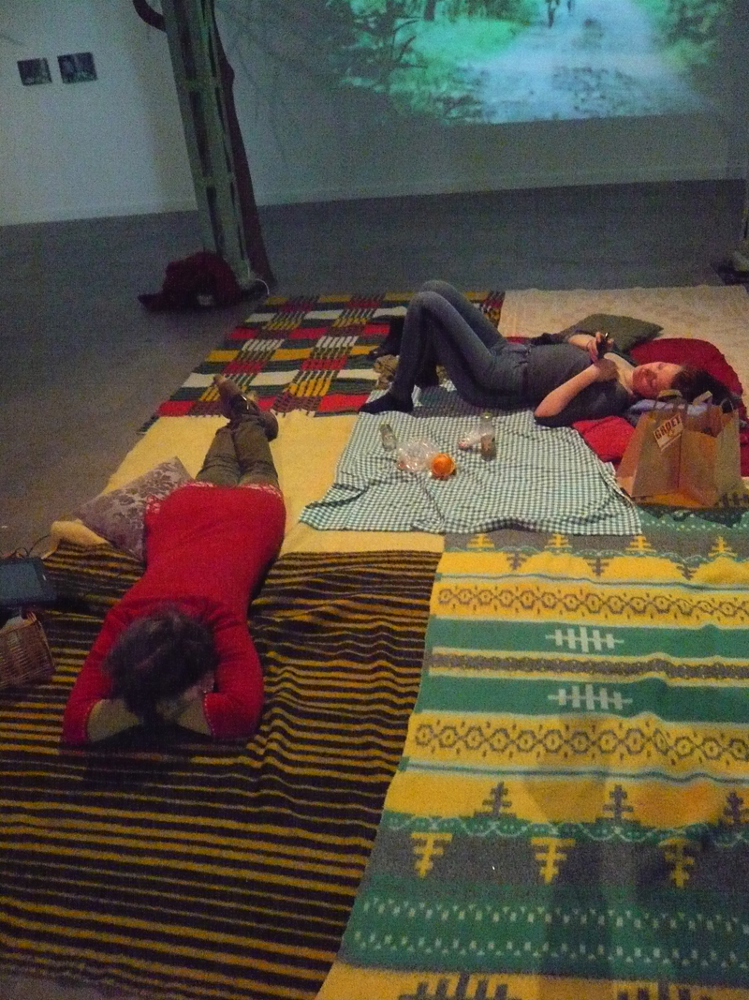
De workshop 'Eten uit het bos' was op een regenachtige dag. De deelnemers gingen onder leiding van de natuurgids Geertje Jansen op pad in de omgeving van de Willem2fabriek om planten te plukken die ze later in de installatie zouden verwerken tot eetbaar lekkers die ze op het picknickkleed zouden gaan opeten. Er o.a. lekkere limonade gemaakt, spreads en smooties. Geertje kon goed vertellen over de achtergronden van de verschillende planten en alles zag er prachtig uit. Hieronder zie je de deelnemers met hun 'Roodkapje-mandjes' dapper door de regen stappen..Eén van de deelneemsters vertelde dat ze nu heel anders om zich heen kijkt naar wat er groeit, en zich er meer van bewust is geworden.
 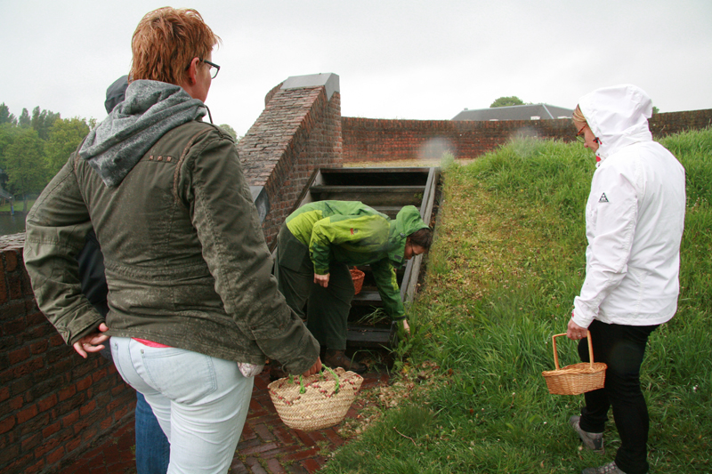
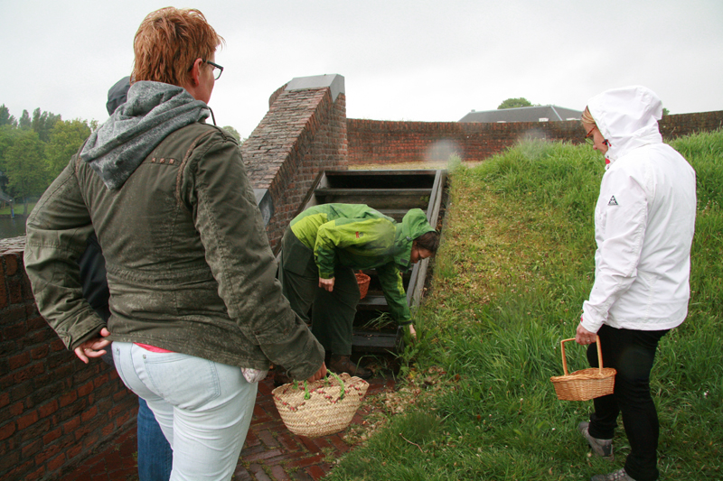 

 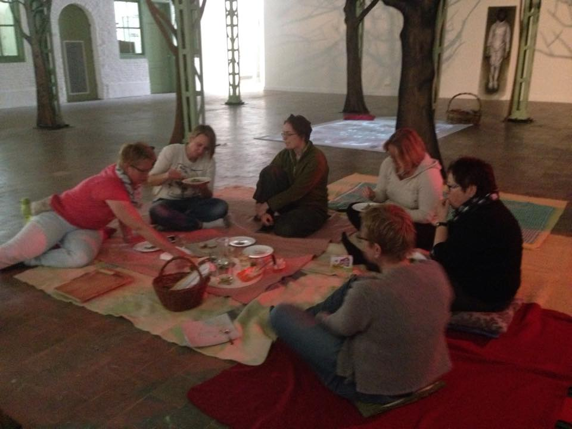
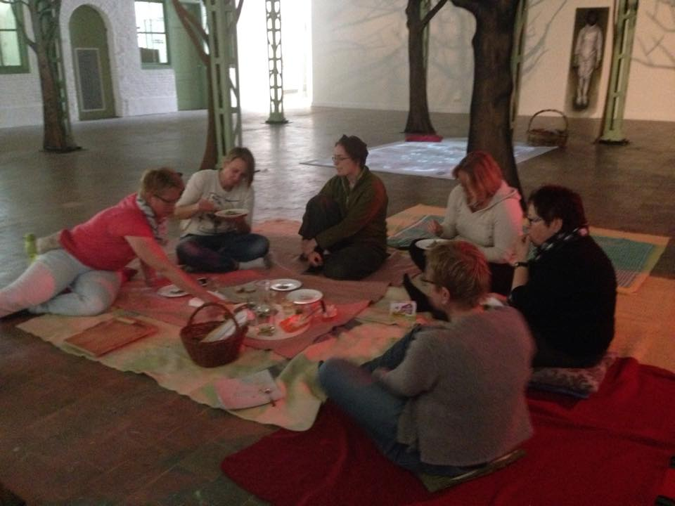
Vandaag ga ik bosvruchtentaart bakken voor de kinderen die morgen film komen kijken in het bos..en op 30 mei a.s. zaterdag vindt de workshop 'Bos in druk' plaats i.s.m. het grafisch atelier en een natuurgids. Deelnemers gaan wandelend planten en takken verzamelen die verwerkt worden tot materiaaldruk op groot formaat. De workshop is met 10 deelnemers vol! En dan zondag de 31e modeltekenen in de installatie met ook 10 deelnemers. Op 6 juni in de avond nog een besloten bijeenkomst (modeltekenen) met de leden van de naturistenvereniging, en 7 juni is het alweer de laatste dag van dit avontuur.
Alweer meer dan een maand geleden dat ik heb geschreven in dit blog. De tijd vliegt..ik heb aan één stuk door gewerkt..Op de achtergrond de fluitmuziek van Debussy, het geluid van kruisende degens, en vogels. Ik zit achter mijn laptop in mijn installatie in de Willem2Fabriek. Afgelopen vrijdag was de opening en het ging goed. Er waren veel mensen op af gekomen en het was mooi om te zien hoe hetgene ik in gedachten voor had gesteld werkelijkheid werd. Wonderlijk hoe de schermers voegden in mijn donkere kartonnen woud, vervreemdend maar toch ook passend. Ik ben blij met een mail die ik toegestuurd kreeg:
"Chapeau voor je presentatie in de Willem 2.
Het environment, de installatie, of was het nou een décor? Goede verwarring. Maar ook de inleiding met de referentie naar het boek, de muzikale omlijsting bij de schermutselingen, of was het een performance? Nee, het was niet in een hokje onder te brengen. Anders, maar het deed me Alys denken.
Dan waren er je prachtige, kleine schilderwerken, die de veellagigheid van je presentatie een ziel gaven. Waren zij de feitelijke tentoonstelling of waren ze de sleutel tot de presentatie als geheel?
Grappige onzekerheden voor iedereen."
Fotografie: Marc Bolsius


 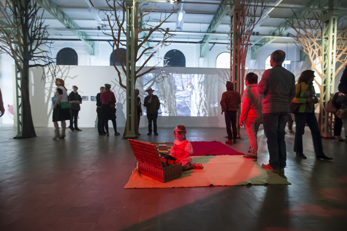
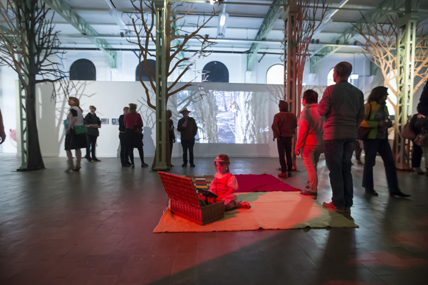 
Nu ben ik de themapicknicks aan het voorbereiden..A.s zaterdag komen leden van de landelijke naturistenvereniging, maar ook iemand van de naturistenvereniging van het Engelenmeer en een student die afstudeert op mode aan een academie in Amsterdam. Zij houdt zich in haar afstuderen bezig met de naakte mens en zal ook naakt deelnemen aan de picknick. In totaal komen er 10 mensen een uur genieten van de lekkere dingen die Tijdink en Tijdink ons gaan voorschotelen. Spannend hoe het gesprek zal gaan verlopen. Een uur is zo voorbij..
Zondag vindt de themapicknick 'De fabrieken van Den Bosch' plaats. Deelnemers zijn: Ivonne van der Velden (intendant van de Willem2Fabriek), Cor van Hillo (architect van architectenbureau VHV, verantwoordelijk voor de verbouwing van de Willem2Fabriek), van stichting Tramkade/de Heus: Simone Kramer en Geert Snijders, Eric Alink (journalist en kraker van het eerste uur in en Bosch),Maurice Horsten (directeur van de BIM), Jan van der Putten (directeur van de Verkadefabriek), Isidoor Wens (kunstenaar/Artots/Melkfabriek)
Oh ja en dan is er zaterdag ook nog de workshop 'Eten uit het bos' door Geertje Jansen, wandelend op zoek naar eetbare planten en deze bereiden in de installatie. Er zijn nog enkele plekken beschikbaar.
Wordt vervolgd..
12-04-2015
Hard aan het werk aan mijn bomen. Hieronder zie je mijn tafelblad die een bijzondere huid heeft gekregen na al het snijden in het karton. De berg karton naast mijn tafel wordt alsmaar hoger. Boom 9 is bijna klaar. Acht bomen liggen als bouwpakket in dozen op de gang buiten mijn atelier.


Het leuke van dit project en van mijn manier van werken is dat ik te maken heb met veel verschillende soorten mensen. Het lastige is dat ik te maken heb met veel verschillende soorten mensen, die ieder weer hun eigen beeld en ideeën hebben.
Het projectplan dat groeit voordat ik het ten uitvoer ga brengen zie ik als een gedetailleerde schets, maar onderweg door de participatie van verschillende mensen in het project gebeuren er onverwachte dingen. Alsof een deel van het schilderij niet wordt zoals verwacht omdat het schilderij als het ware 'zichzelf schildert'. Je kunt het 'onverwachte' zien als een mislukken van een deel van het schilderij b.v. maar je kunt het ook zien als een kans om iets nieuws te ontdekken; iets wat om de wil heen gaat. De schets wordt gaandeweg het project overgenomen door het schilderij waarvan de participerende mensen de kleuren vormen. Soms mengen ze, soms ook niet en soms is de kleur op en niet voorradig. Kortom; het is een avontuur waarin ik actie met afstand innemen moet afwisselen net als tijdens het maken van een schilderij op doek.
Het doek is nu wel heel erg groot; de ruimte van de Willem2fabriek.. en de mensen die de ruimte straks gaan bevolken ben ik aan het benaderen en aan het ontmoeten. Wat was het leuk om met Geertje Jansen te praten over haar werkzaamheden bij de Transfarmers. Geertje gaat een workshop verzorgen op 16 mei van 14 tot 17 uur.
Dit is de tekst die ze me mailde over de inhoud van haar workshop :
Eten uit het bos
Eetbare planten zoeken, proeven en bereiden
Door Geertje Jansen van Wandeloogst
Terwijl de mens denkt dat hij de natuur verovert, verovert de natuur de stad. In elke berm een paardenbloem, in elke moestuin een brandnetel. Beter dan ze verfoeien, kun je ze opeten.
Tijdens de workshop gaan we op zoek naar eetbare natuur in de stad. We gaan het oogsten zoals onze voorouders dat deden, met mand en mes. En we gaan dit wilde stadsvoedsel bereiden. We maken broodspread, kruidenboter, groene smoothie en wilde thee.
Dus, hop de stad in op zoek naar wilde groente. We laten het ons smaken tijdens de picknick in het bos.
We beginnen met een korte introductie daarna gaan we op wildplukwandeling in de stad. Terug bij de installatie in de Willem2fabriek gaan we het gevonden voedsel bereiden en we picknicken in het woud der verwachting.
Prijs: €30,00
Ik was verrast door de poëtische toon van haar tekst, maar toen ze me vertelde dat ze voor Loesje heeft gewerkt begreep ik dat ze langere tijd met taal gespeeld heeft.
Geertje is in Den Bosch actief met de Transfarmers die braakliggende stukken grond omploegen tot moestuin waarbij omwonenden worden betrokken, om mensen bewust te maken van waar je eten vandaan komt. Ze hebben ook een mobiel restaurant en allerlei andere activiteiten rondom groen en de bewustwording daarvan. Moestuinen en Food, zoals hip eten in deze tijd heet, zijn in. Waarom eigenlijk? Die vraag zal ik eens stellen tijdens de themapicknick 'Kunst als eerste levensbehoefte' op 23 mei.
Hieronder nog een foto die Geertje me zond. Dan kan je zien hoe het er tijdens de workshop aan toe kan gaan.
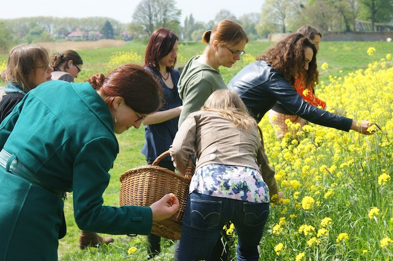
Overige workshops heb ik onder elkaar gezet op http://moniquebroekman.created.today/project/picknick-het-boshet-woud-der-verwachting/

De laatste uitslag betreft het project Picknick in het bos/Woud der verwachting is binnen. Het Prins Berhard cultuurfonds financiert ook mee! Niet het gehele aangevraagde bedrag maar ik kan in volle vaart door gaan met het project en dat is nodig want er is nog veel te doen tot de opening op 8 mei 20.00 uur. Op de afbeelding hierboven zie je de kruin van boom 1 die ik als een bouwpakket in een doos ga vervoeren. De bomen worden te groot (4m 50cm hoog en heel breed door zijwaartste takken) om in z'n geheel te verplaatsen van mijn atelier naar de Willem 2. Mijn hele atelier is gevuld met boomstammen en takken, ik werk deels op de grond, ben aan het zagen, tekenen op groot formaat dik karton wat ik wel begin te voelen aan mijn spieren.
Met de twee werkneemsters van de NFN, de landelijke naturistenvereniging, heb ik een leuk plan gesmeed. We gaan een exclusieve besloten avond organiseren voor de leden van de vereniging waar ik een workshop (naakt-)modeltekenen (in het bos) ga geven. Ik heb er nu al zin in! Overigens staat er nog een workshop modeltekenen in de installatie in de planning (voor iedereen die het leuk vindt om deel te nemen) op 1 van de zaterdagmiddagen gedurende de projectperiode, naast de workshop materiaaldruk i.s.m. Roos Terra en het Grafisch atelier, en de workshop eten/koken uit het bos..Definitieve data/tijden/prijzen volgen spoedig.
Op een online magazine van het Fonds voor Cultuurparticipatie staat het 1 en ander geschreven over Picknick in het bos, kijk maar op http://www.cultuurparticipatie.nl/magazine/over-de-kunst-van-het-picknicken/
Verder was ik nog op zoek gegaan naar archiefbeelden van de Willem2fabriek, maar ik stuitte op dit filmpje wat toch wel toepasselijk is:
________________________________________________________________________________________________________________________________________________________________________________________________________________________________________________________________________________________________________________________________
13-03-2015

De gang voor mijn atelier staat vol met dozen waarin het karton vervoerd is waarop ik grote bomen aan het tekenen ben.
Vandaag heb ik te horen gekregen dat het project 'Picknick in het bos...' mede ondersteund wordt door het regionaal business-netwerk Hermes, naast de ondersteuning van het fonds voor cultuurparticipatie, de gemeente 's-Hertogenbosch en de Willem2fabriek. Op 23 maart krijg ik de laatste uitslag binnen van het Prins Bernhard Cultuurfonds..
Toch ben ik al fysiek begonnen aan het maken van de bomen omdat het temmen van de grote ruimte van de W2 met de pilaren veel werk is..Een project als dit is gelaagd en spannend om te realiseren. Het rond krijgen van de begroting is een hele uitdaging, het enthousiasmeren van verschillende mensen, mijn verhaal duidelijk communiceren en dan weer de deur dicht, het atelier in en me verbazen over het karakter wat in de vorm van elke boom schuil gaat. Het project groeit stukje bij beetje en wordt steeds meer werkelijkheid naarmate de fondsen mee investeren.
In mijn werk als kunstenaar staat niets vast. Het is een onzekerheid die prikkelt en me in beweging zet, het geeft vrijheid en een gevoel van onafhankelijkheid die ik mezelf steeds weer voor ogen moet houden. Achterover leunen is er niet bij. Het is erop of eronder..
Vorige week een erg leuke bijeenkomst gehad met twee werkneemsters van de NFN, de landelijke naturistenvereniging. Zij waren benieuwd naar de ruimte van de Willem2. Ik denk dat er een mooie samenwerking uit kan gaan komen..Zij vertelden dat een groot deel van hun leden hoog opgeleid zijn en niet alleen geïnteresseerd zijn in de natuur maar ook in kunst en cultuur. Ik ben erg benieuwd welke leden mij meer kunnen vertellen over naturisme in deze tijd op het picknickkleed in 'Het woud der verwachting' in de Willem 2..Ondertussen van alles uitgeprobeerd samen met de technische meedenkende videoman van de W2 Peter van de Zanden en Lodewijk van Allvideo..Op bezoek geweest bij de directeur van de Verkadefabriek Jan van der Putten, aan de overkant van de Willem 2. Heel graag wil ik samenwerken met de Verkade, want daar zit toch veel publiek die ik wil laten picknicken in Woud Willem.
En omdat ik dol ben op historische films:
_______________________________________________________________________________________________________________________________________________________________________________________________________________________________________________________________________________________________________________________________________________________________________________________________________________________________
25-02-2015
Research
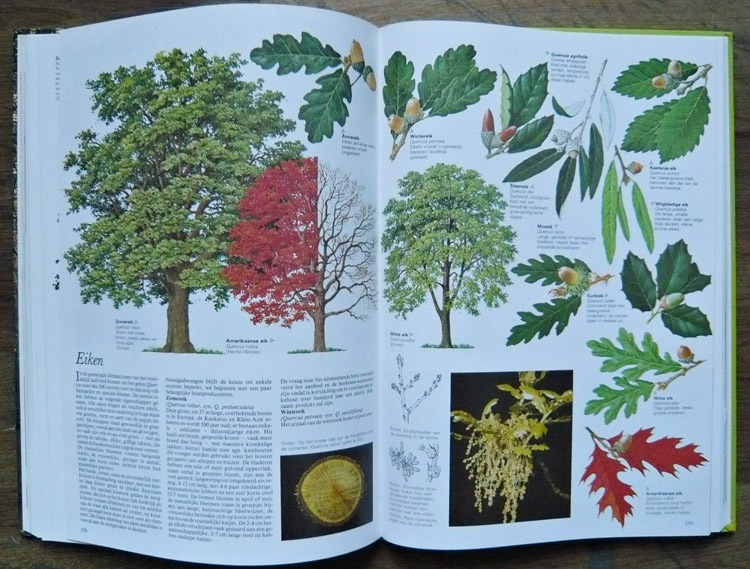
Voor project 'Picknick in het bos/Het woud der verwachting' in de Willem2 fabriek ben ik me aan het verdiepen in bomen omdat ik de industriële ruimte zal transformeren tot bos. Ik ga ineens heel anders om me heen kijken als ik van mijn huis naar mijn atelier fiets of loop. De bomen die ik onderweg tegenkom hebben allemaal een ander karakter ook al zijn ze van eenzelfde soort. Ik ben ze aan het tekenen en in het klein aan het maken van karton. Dat maken is een beetje kijken met de handen. Het duurt ook langer waardoor je meer gaat zien.
Ondertussen ben ik contacten aan het leggen onder andere met het Grafisch Atelier en Roos Terra. Zij zal in samenwerking met het Grafisch Atelier 's-Hertogenbosch een workshop gaan verzorgen in mei (definitieve datum volgt nog) in het kader van mijn project. Roos maakt prachtige monotypes (en realiseert projecten) waarin de natuur nadrukkelijk aanwezig is. Hieronder zie je een werk van haar. Haar manier van werken in relatie tot Het Woud Willem zal uitgangspunt zijn voor een inspirerende workshop. Binnenkort heb ik met Roos en het Gafisch atelier een afspraak om de workshop meer gestalte te gaan geven. Misschien vind je het interessant om deel te nemen? Laat het me maar weten info@moniquebroekman.nl. Er zullen nog meer workshops plaats gaan vinden waar ik je later meer over ga vertellen.
 'If only I were there', etsinkt en kleurpotlood, 61cm x 38,5cm , 2014, Roos Terra
'If only I were there', etsinkt en kleurpotlood, 61cm x 38,5cm , 2014, Roos Terra
Deze week ook met Evelien Clement contact gehad die de opening 8 mei muzikaal zal omlijsten met een prachtig stuk op dwarsfluit. Zij is een enthousiaste muziekdocent die zowel zang- als dwarsfluitles geeft. En ik kan dat weten.. want mijn dochter heeft bij haar met erg veel plezier les.
Volgende week ga ik twee leden/werknemers van de Nederlandse Federatie van Naturistenverenigingen ontmoeten in de tentoonstellingsruimte van de Willem 2 fabriek. Zij zijn geïnteresseerd in het project, willen de locatie zien en meer informatie, nadat ik ze de vraag heb gesteld of hun leden naakt willen participeren tijdens de themapicknick 'Het blote bos', over natuurlijkheid, maakbaarheid van de natuur, het aards paradijs etc..
In mijn zoektocht op internet naar de oorsprong van het naturisme kwam ik interessant historisch filmmateriaal tegen (dankzij deze site http://www.naturisme-online.nl). Kijk maar eens naar onderstaande Duitse film uit de jaren 20:
Onderstaande documentaire uit de jaren 50 is ook niet mis..over hoe er vanuit de kerk en 'de man op de straat' tegen naturisme aangekeken werd én naturisten zelf aan het woord van oud tot jong, vrouw en man.
___________________________________________________________________________________________________________________________________________________________________________________________________________________________________________________________
6-02-2015
Door de stemmen van het publiek en positieve beoordelingen van medewerkers van het fonds voor cultuurparticipatie wordt het project 'Picknick in het bos/Het woud der verwachting' in de Willem 2 fabriek in Den Bosch in mei van dit jaar gehonoreerd met een subsidie en wordt het steeds meer werkelijkheid. Hier kan je de beoordeling lezen en meer achtergronden over het project https://www.jijmaakthetmee.nl/aanvraag/picknick-boshet-woud-der-verwachting
Het project wordt ook ondersteund door de gemeente 's-Hertogenbosch.
Ik ben concreter begonnen met afspraken, contacten leggen en materiaalproeven te doen. Het is een omvangrijk en gelaagd project waarin het veel schakelen is; werken met de handen, regelen, communiceren, plannen, passen en meten.
Het is spannend om met verschillende nieuwe mensen contact te gaan leggen en weer wat oude contacten aanhalen, die ik uit ga nodigen voor een picknick in Woud Willem (de getransformeerde industriële tentoonstellingsruimte van de Willem2) in mei.
Het project zal aanvangen met een performance met schermers van de Schermclub Den Bosch. Voormalig bondscoach Roel Verwijlen is enthousiast over onze samenwerking en er hebben zich al schermers aangemeld voor deelname. Ik ben erg benieuwd hoe het kruisen van de degens zal klinken vanwege de accoustiek in de ruimte, maar ook naar het beeld wat het op gaat leveren. En de vermenging van de schermers die hun eigen publiek mee gaan nemen met het publiek wat doorgaans op een opening afkomt, hoe zal dat zijn. Het is een fascinerende wereld die van de schermers. Ik hoop dat veel mensen dat gaan ervaren in Woud Willem.
Er zullen vier themapicknicks plaats vinden in de installatie.
Eén gaat over de gemeentepolitiek; de nieuwe wind die gaat waaien met het nieuwe college dat pas is geformeerd. Wat betekent dit voor het kunstklimaat in Den Bosch?
In de picknick 'Het blote bos' nodig ik naturisten uit naakt te komen recreeëren in de installatie. Het gesprek zal gaan over natuurlijkheid en maakbaarheid van de natuur. Over Adam en Eva. Op zoek naar het aards paradijs..


Foto: Diane Arbus
In de picknick 'De fabrieken van Den Bosch' zal het gaan over het verleden, heden, toekomst van de fabrieken van Den Bosch, over de transformatie van plekken, over maakbaarheid van kunstplekken. Er worden mensen uitgenodigd die te maken hebben met-, gewerkt hebben bij- of op dit moment werkzaam zijn bij de Gruyterfabriek, de Heus, Verkade, Melkfabriek, W2.
'Kunst als eerste levensbehoefte' is een thema tijdens de picknick waarin bemiddelde mensen uitgenodigd worden en mensen die afhankelijk zijn van de voedselbank of er werken, mensen die van eten hun werk hebben gemaakt zoals: Hertogboeren, fooddesigners, stadslandbouwers/ transfarmers. Over kunst als voedsel, voedsel als inkomstenbron over armoede en overvloed.
En dan zullen er verschillende workshops nog gaan plaats vinden..maar daarover later meer.
Het is weer tijd om met de handen te gaan werken..

________________________________________________________________________________________________________________________________________________________________________________________________________________________________________________________________________________________________________________________________________
24-01-2015
De afgelopen tijd ben ik intensief bezig geweest met de ontwikkeling van een project dat zich gaat afspelen van
8 mei t/m 7 juni in het nieuwe kunstencluster in de Willem 2 in 's-Hertogenbosch.

Mijn boek In Tussentijd vormt het uitgangspunt voor project 'Picknick in het bos / woud der verwachting' in de ruimte op de eerste verdieping van het kunstencluster W2. De titel van het project verwijst naar het schilderij van Manet Le déjeuner sur l'herbe en Het woud der verwachting; de bestseller van Hella Haasse dat zich afspeelt in de middeleeuwen, over macht, strijd, edelen, wetenschap, poëzie en ballingschap.


Hoofdstuk vijf van In Tussentijd: ‘Het bos en de familie’ wordt als decor/sfeerbeeld eruit gelicht waarin de ruimte van de W2 wordt getransformeerd. De pilaren van de W2 worden de bomen van het bos waarin verschillende interactieve gebeurtenissen, workshops en een performance zullen plaats vinden. Je wordt dan ook van harte uitgenodigd te participeren...Maar daarover later meer..

 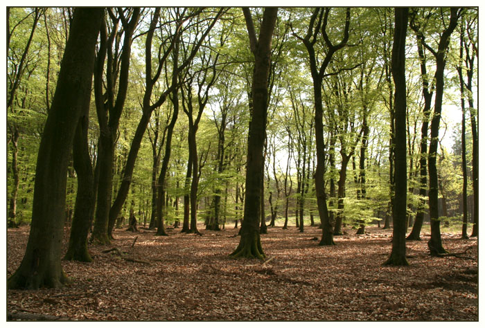
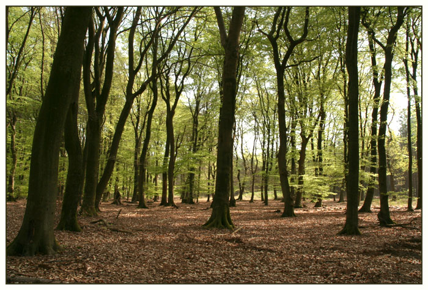
Inmiddels heb ik bericht gekregen dat de gemeente 's-Hertogenbosch het project financieel ondersteunt, maar er lopen nog wat meer subsidieaanvragen waaronder bij het Fonds voor cultuurparticipatie. Op deze website https://www.jijmaakthetmee.nl/aanvraag/picknick-boshet-woud-der-verwachting kan je meedenken over het project. Op 29 januari hoop ik het project in de volgende fase van de aanvraag te plaatsen en wel 'beslis mee'. Dat wil zeggen dat publiek mag stemmen vanaf 29 januari (kosteloos uiteraard) op het project, en met genoeg stemmen zal de subsidieaanvraag gehonoreerd worden. Ik hoop dat je mee wilt denken en wilt stemmen op dit project, want het gaat wel heel bijzonder worden..

_________________________________________________________________________________________________________________________________________________________________________________________________________________________________________________________________________________________________________________________________________________________________________________________________
23-01-2015
In december 2014 verscheen onderstaand artikel van dermatoloog Marianne Crijns in Medisch Contact, over een schilderij van mij dat in haar werkkamer hangt.
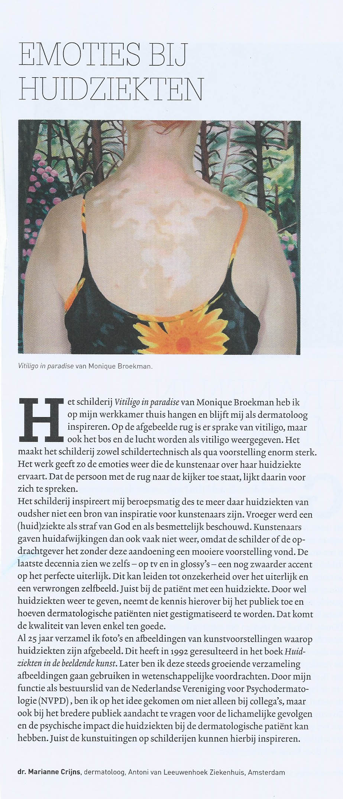
_________________________________________________________________________________________________________________________________________________________________________________________________________________________________________________________________________________________________________________________________________________________________________
1-12-2014

Hotelkamer in Nieuwpoort
De tijd vliegt. 17 en 18 november was ik te gast bij Jan Moeyaert en zijn vrouw Lily in Schore in België. Jan is intendant voor het kunstenfestival Watou en Beaufort, een driejaarlijkse kunstmanifestatie langs de Belgische kust. Al sinds een jaar of 14/15 zijn wij trouwe bezoekers van Watou, een dorp op het Vlaamse platteland. Door de komst van een poëziefestival vele jaren geleden, waarin (internationale) beeldende kunst en poëzie aan elkaar worden gekoppeld op diverse locaties in het dorp, weten steeds meer taal- en kunstliefhebbers deze bijzondere locatie te vinden. Veertig procent van de bezoekers komt uit Nederland. Er zijn inmiddels hotels door ontstaan en de horeca vaart er wel bij. Sinds enige jaren organiseert Jan Moeyaert deze manifestatie en is de poëzie wat verruimd naar 'verzamelde verhalen'. Jan reageerde enthousiast op mijn boek (In Tussentijd) wat ik hem had opgestuurd en nodigde me uit om eens langs te komen om te kijken of we tot een gezamelijk project kunnen komen. Inmiddels ben ik daar druk mee bezig en krijgt het één en ander langzaam maar zeker gestalte. Het kunstenfestival in Watou zal zich afspelen in juli/augustus 2015.
http://kunstenfestivalwatou.be/
__________________________________________________________________________________________________________________________________________________________________________________________________________________________________________________________________________________________________
28-10-2014

Z.t. 26cm x 13cm, olieverf/paneel, 2014
Mijn hoofd is nog gevuld met de beelden van het laatste weekend van de Dutch design week dat vooraf ging met een bijeenkomst van het BKKC Material XL food. Op facebook heb ik met veel belangstelling de melige discussie omtrent deze titel gevolgd; b.v. waarom moet eten 'food' heten? Eten is hip, duurzaamheid ook, en dan nog een sociaal sausje eroverheen wat het helemaal af maakt. Het was opvallend hoe vaak de term 'mensen met afstand tot de arbeidsmarkt' viel. Negatief bekeken zou je kunnen zeggen dat deze mensen de gaten vullen die vallen als het geld op is. Maar er zijn wellicht ook genoeg initiatieven die het goed bedoelen en deze mensen vanuit idealisme opzoeken, daar waar de overheid het af laat weten. Het woord 'verbinden' is wat dat betreft ook een topwoord, en we participeren ook wat af. Er is zelfs een nieuwe school opgericht in Brabant die les gaat geven in het werken als kunstenaar in de wijken. Men lijkt te denken dat er formules bestaan van hoe je als kunstenaar 'de wijk' in moet gaan. De overheden begonnen met het reguleren van geld wat besteed wordt aan de kunsten; d.m.v. 'community-art' wordt zichtbaar dat gemeenschapsgeld weer terecht komt bij de gemeenschap. Een heerlijke controleerbare en meetbare 'kunstvorm'. De kunstenaar wordt in het slechtste geval de buurthuiswerker die wegbezuinigd is. Kunst in de openbare ruimte mag bijna niet meer 'autonoom' zijn. Hoewel je je af kunt vragen of een werk in de openbare ruimte autonoom kán zijn. Het verhoudt zich per definitie tot zijn omgeving. Er lijkt alleen nog geld voor kunst in de openbare ruimte van de overheid als deze zich richt op de 'community'. En die community ziet dan weer zo'n kunstenaar aan zijn deur verschijnen die leuke dingetjes wil doen om de buurt 'te verbinden', de leefomgeving te verbeteren etc. De kunstenaar van deze tijd kan alles. Zo lijkt het.
Ik vraag me af of er zo'n scheidslijn moet zijn tussen 'de autonome' of de meer 'toegepaste' kunsten in de openbare ruimte. Het gevaar van het teveel 'bedienen' van de 'community' is dat het de neus uit komt van 'de wijken' en dat de gepaste kritiek of afstand van de kunsten oplost in het pleasen van de bevolking. Interessanter is het, wat mij betreft, om voor de autonome kunsten, plekken te zoeken in de samenleving waar deze getoond kunnen worden. Door de vervreemding van de locatie ontstaat er een nieuwe kijk op eenzelfde werk.
________________________________________________________________________________________________________________________________________________________________________________________________
13-10-2014

Het was leuk en intensief deze 'One night stand' in de Kruisuimte in Eindhoven. Zaterdagochtend inrichten, zondagavond afbreken en veel publiek. Hoe snel en eenvoudig kan het zijn en gaan. Wat telefoontjes over en weer -vanuit Henk Olijve en Giovanni Dalessi- wie er zin heeft in een weekend een tentoonstelling te maken. Het ging als vanzelf en het hing prachtig, mooie gesprekken gehad en interessante nieuwe kunstenaars ontmoet. Is het tij aan het keren, is het mogelijk om los van galeries een nieuwe vorm te bedenken die kunstenaars onafhankelijker maakt? Er is een directer contact met het publiek op deze manier, maar het kan een kunstenaar ook 'verlegen' maken. Het is toch gemakkelijker het werk van een ander te verkopen. Dat is wellicht ook mogelijk in deze constructie van een zogenaamde pop-up tentoonstelling van een groep kunstenaars, tenminste als ze enthousiast zijn over het werk van de collega exposanten. Ik ben benieuwd of het een vervolg gaat krijgen.
_______________________________________________________________________________________________________________________________________________________________________________________________________________________________________________________________________________

Henk Olijve belde op het moment dat ik mijn tas op mijn fiets aan het vastmaken was, redelijk wiebelig, midden in de bossen van Helvoirt. Ik had een nachtje in onze caravan geslapen en de avond daarvoor een goede werkavond op onze veranda gehad. Achter de laptop, glaasje wijn ernaast, het langzaam steeds donkerder zien worden en heel stil. Ik kreeg de vraag of ik zin had mee te doen aan 'One Night Stand', hoewel deze titel er nog niet was op het moment van de vraag. Een twee-daagse tentoonstelling voortkomend uit kunstenaars die het heft in eigen handen nemen, los van een galerie (waarvan er steeds meer verdwijnen door de aanhoudende crisis). Eigenlijk werk ik de afgelopen jaren niet meer zo; het werken naar een tentoonstelling toe. Ik heb daar op een bepaald moment een andere weg voor gezocht omdat ik mijn werk meer 'in de wereld' wilde laten plaats vinden, meer in interactie met mijn omgeving. Het maken zelf, het proces, is net zo belangrijk als het eindresultaat. Wel speelt schilderen, of schilderijen, er meestal een rol in, als een sfeerbepalende betekenislaag. Ik vind het dan ook spannend om nu mijn werk weer in een tentoonstellingssituatie te gaan zien en tonen, hoewel het meer een twee-daags feestje zal worden denk ik want er zijn al meer dan 1000 mensen uitgenodigd (die natuurlijk niet allemaal gaan komen, maar het is een groepstentoonstelling en een thuiswedstrijd voor een aantal van de exposanten)
Voor diegenen die dit lezen, wees welkom. (Zou iemand dit lezen? Op facebook krijg je reacties, sta je in contact, heb je een soort uitgestelde dialoog. Een website is een ander ding-geworden- statischer, maar minder in de waan van de dag. Misschien geeft het daardoor meer vrijheid of meer gewicht.)
Ik ben zelf ook erg benieuwd naar de andere werken, en hoe het geheel zal zijn.
Hieronder een plaatje van mijn buitenatelier.

_________________________________________________________________________________________________________________________________________________________________________________________
15-9-2014
Het leek me een goed idee om vanaf 1 september iedere dag een klein stukje te schrijven op deze plek..en nu ben ik alweer een eind verder in de tijd. Maar dat komt omdat ik al mijn aandacht en energie nodig had (jaja smoesjes) voor de schets van koning Willem-Alexander en bovendien had ik nog twee portretopdachten af te ronden. Hieronder zie je Marlies, ter gelegenheid van haar 60e verjaardag; hoe ze vroeger was en nu. Aan beide zijden van een mahonie houten blokje van 14,5cm x 14,5 cm x 4 cm heb ik haar geschilderd in olieverf en aan de zijkant van het hout ontmoeten de twee portretten elkaar. (hier kan je de plaatjes groter bekijken: http://moniquebroekman.created.today/project/portretopdrachten/ )
 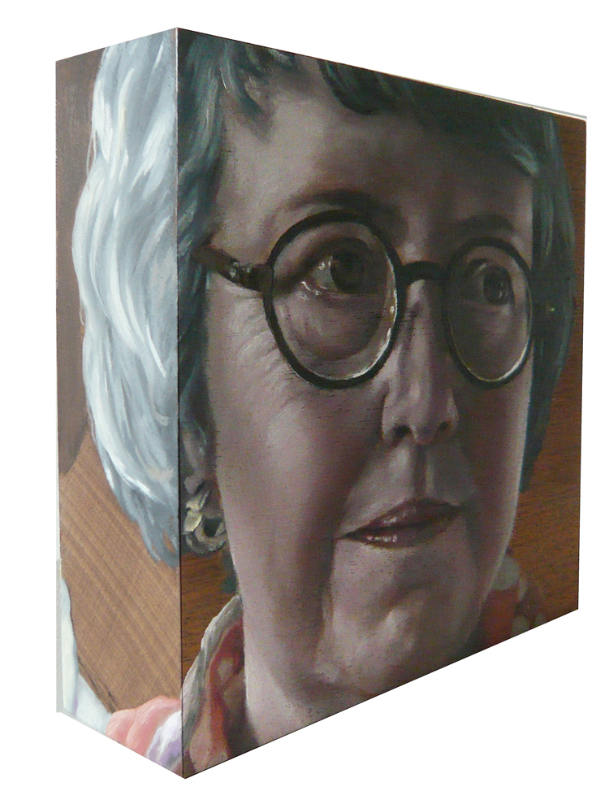
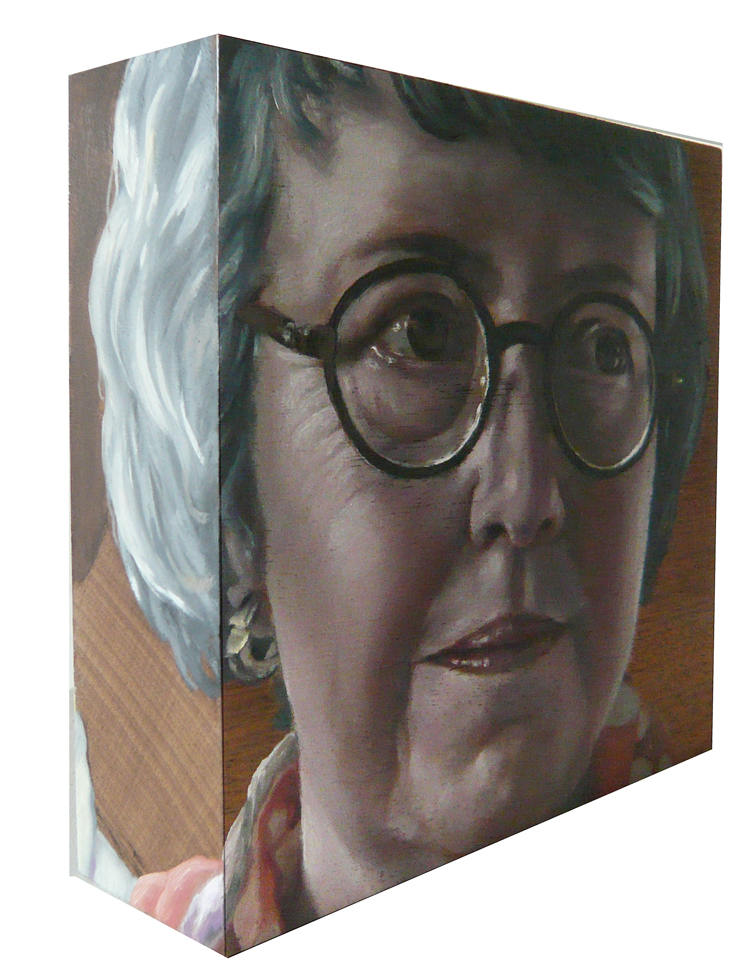
En Anne: 
Het is wachten op de uitslag wie er het koningsportret mag schilderen. Over twee weken weet ik het. Nu ga ik proberen er niet aan te denken. Gelukkig is er van alles te doen, bijvoorbeeld deze website bijwerken. Ik merk hoe onvolledig hij is nu ik er mee bezig ben. Project 'Puck' toegevoegd, en het hoofdstuk over 'De Firma Broekman' aangevuld met de installatie die ik dit jaar bij architectenbureau De Twee Snoeken heb gemaakt. De tijd gaat snel..Vorig jaar rond deze tijd was ik nog volop in voorbereiding voor boekproject 'In Tussentijd', wat nu alweer voorbij is. Maar ik ben wel heel blij met het resultaat; Het Boek.
_____________________________________________________________________________________________________________________________________________________________
3-09-2014
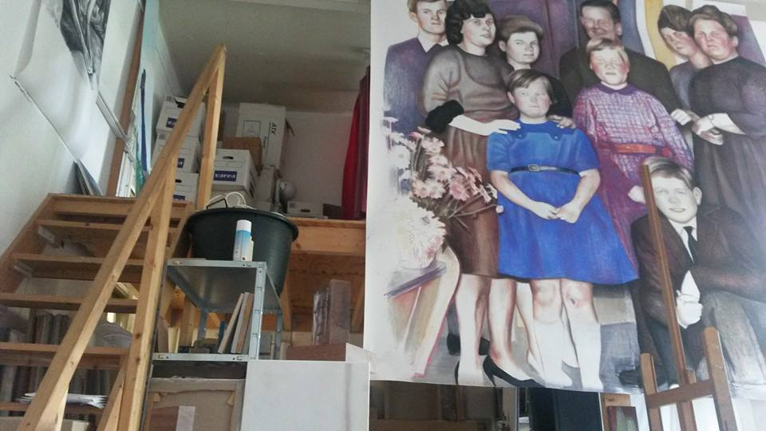
De monumentale pasteltekening (ongeveer 3 meter bij 4 meter) van De Firma Broekman die dienst deed tijdens de performance/tentoonstelling op locatie van architectenbureau De Twee Snoeken i.v.m. project In Tussentijd in februari van dit jaar, heb ik opgehangen hoog in mijn atelier. Iedere dag als ik mijn atelier binnen kom moet ik bukkend onder de tekening door. De tekening vormt een prettige afscheidingswand tussen mijn etage boven waar ik 'schone hoofddingen' doe, zoals computerdingen; administratie, projecten opzetten, of films monteren en beneden: de 'doe-afdeling' waar het wat minder schoon is. Het ruikt weer flink naar de olieverf. En als ik druk bezig ben slingeren de tubes overal rond, zonder dop vaak omdat ze op de 1 of andere manier altijd zoek raken. Het is prettig weer met olieverf te werken na een langere tijd alleen met acrylverf in de weer te zijn geweest. Acrylverf was pracktischer vanwege mijn projecten in de openbare ruimte; sneldrogend en met de juiste vernis ook zogenaamd 'hufterproof'. Maar olieverf voelt als thuiskomen. Mijn portretten in opdracht staan te drogen en wachten op hun eigenaars. Zoals deze hieronder waarvan ik een detail laat zien. De dag was als een roes.

______________________________________________________________________________________________________________________________________________________________________________________
2-09-2014
Vandaag was het 'koningsdag'; gewerkt aan mijn schets (portret van koning Willem-Alexander voor in het gemeentehuis van 's-Hertogenbosch) die ik volgende week vrijdag moet presenteren. Ik werk er met veel plezier aan, maar laat er nog niks over los..
Vorige week was ik in het Mauritshuis waar ik Holbein eigenlijk opnieuw ontdekt heb. Zijn schilderijen blijven sindsdien bij me. Zo vol aandacht geschilderd, zo geconcentreerd, maar ook klein wat het werk (wat mij betreft) des te sterker maakt. Het is heel glad geschilderd, zijn handschrift is onzichtbaar, dienstbaar aan de verstilling, aan het beeld en de helderheid. Wonderlijk vond ik de lijst om het werk (zie hieronder), ingelegd met stukjes hout en marmer. Zeer dominant, maar daardoor ook opmerkelijk.

Concentratie is een wonderlijk ding- of misschien zijn de juiste betrokkenheid of gefocused betere woorden- bij wat ik bedoel te zeggen. Werkelijk betrokken zijn bij het ding wat ik op dat moment aan het maken ben, zonder mezelf te verliezen in het werk zelf of in gedachten die er niet toe doen, en toch ook met de juiste afstand. Door het in gedachten oproepen van de portretten van Holbein tracht ik in de juiste gemoedstoestand te komen, met aandacht en overgave voor het moment , voor het doen.
En morgen zien we wel weer verder.
_________________________________________________________________________________________________________________________________________________________________________________________________________________________________________________________________________________________
Vandaag is het 'portrettendag'. In het kader van het crowdfundinggedeelte van project 'In Tussentijd' konden mensen sponsoren in ruil voor een portret (van een geliefde) in olieverf op een houten blokje van ongeveer 15cm x 15cm. Ik leg vandaag de laatste hand aan één zo'n sponsorportret en een een andere (dubbel-)portretopdracht van een vrouw hoe ze vroeger was en nu. Aan de voorzijde en de achterzijde van het houten blokje heb ik haar portret geschilderd. Hieronder zie je een voorbeeld van zo'n portret; de voorkant en zijkant in olieverf op mahoniehout. De portretten waar ik nog mee bezig ben houd ik nog even voor mezelf..


Op 12 september moet ik mijn schets van koning Willem-Alexander indienen bij het gemeentehuis in 's-Hertogenbosch. Het portret is bedoeld voor in de oranjegalerij van het gemeentehuis. Samen met mij zijn de kunstenaars Evelien van de Griend en Cécile Verwaaijen genomineerd. Erg spannend..Maar goed..de koning is morgen weer aan de beurt.